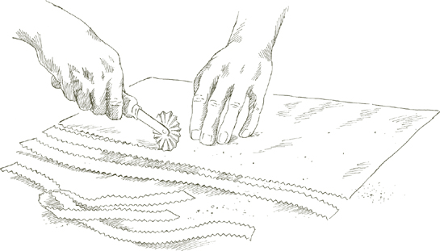
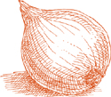
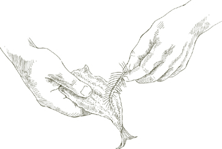

Горшок  Используйте легкую кастрюлю, например, из эмалированного алюминия, которая быстро передает тепло и с которой легко обращаться, когда она наполнена макаронами и кипяток.
Используйте легкую кастрюлю, например, из эмалированного алюминия, которая быстро передает тепло и с которой легко обращаться, когда она наполнена макаронами и кипяток.
Дуршлаг Вместительный дуршлаг с прикрепленными ножками должен надежно стоять в кухонной раковине или большом тазу.
Вода Макаронам нужно много воды, чтобы передвигаться, иначе они станут липкими. На полкило макарон требуется четыре литра воды. Никогда не используйте менее 3 литров, даже для небольшого количества макарон. Добавьте еще литр на каждые полфунта, но не готовьте в одной кастрюле более 2 фунтов. Большое количество макарон сложно приготовить должным образом, а кастрюли с таким количеством воды тяжелые, и обращаться с ними опасно.
Соль На каждый фунт макарон кладите не менее полутора столовых ложек соли, а если соус очень мягкий и недосоленный, то и больше. Добавьте соль, когда вода закипит. Подождите, пока вода снова закипит, прежде чем класть макароны.
Оливковое масло Никогда не добавляйте масло в воду, за исключением случаев приготовления фаршированных домашних макарон. В последнем случае столовая ложка масла в кастрюле уменьшит трение и не даст фаршированным макаронам расколоться.
Расчет порций Из одного фунта фабричных сухих макарон в коробках должно получиться от 4 до 6 порций, в зависимости от того, что следует за макаронами. Примерные порции свежих макарон смотрите в разделе домашняя паста.
Кладем макароны в кастрюлю Макароны добавляются после того, как кипящая вода подсолена и полностью закипела. Положите все макароны за один раз и ненадолго накройте кастрюлю, чтобы вода быстрее дошла до кипения. Смотри, чтобы избежать он выкипает и гасит газовое пламя. Когда вода снова закипит, готовьте либо без крышки, либо с сильно перекошенной крышкой. Используя длинную деревянную ложку, перемешивайте макароны в тот момент, когда они попадают в воду, а также часто после этого во время приготовления.
• Если вы готовите длинные сушеные макароны, например спагетти или персиателли, бросив его в кастрюлю, с помощью длинной деревянной ложки согните пряди и полностью погрузите их в воду. Не разбивайте спагетти или другие длинные макароны на более мелкие кусочки.
• Если вы используете домашнюю пасту, соберите все ее в кухонное полотенце, плотно держите один конец полотенца высоко над кипящей водой, ослабьте нижний конец и позвольте макаронам скатиться в кастрюлю.
Аль денте Макаронные изделия необходимо варить до тех пор, пока они не станут твердыми на вкус. аль денте. Твердость спагетти и другие сушеные фабричные макароны отличаются от тех, что феттучини и другие домашние макароны. Последний никогда не может быть таким твердым и жевательным, как первый, но это не значит, что нужно позволять ему становиться податливо мягким: он всегда должен оказывать некоторое сопротивление укусу. В противном случае макароны становятся свинцовыми, теряют плавучесть и способность быстро передавать вкус соуса.
Слив Макароны быстрого приготовления готовы, и ни через секунду их необходимо слить, вылив из кастрюли на дуршлаг. Несколько раз энергично встряхните дуршлаг из стороны в сторону и вверх-вниз, чтобы слить всю воду.
Соус и перебрасывание Когда макароны будут готовы, подготовьте соус. Не оставляйте высушенные макароны на дуршлаге, ожидая, пока соус будет готов или разогрет. Немедленно переложите готовые осушенные макароны в теплую сервировочную миску. Как только он окажется в миске, начните поливать его соусом. Если нужен тертый сыр, сразу добавьте его немного и перемешайте с макаронами. Тепло расплавит сыр, который затем сможет сливаться с соусом.
В последовательности шагов, которые приводят к приготовлению блюда из макарон и подаче его на стол, нет ничего важнее, чем подбрасывание. До того момента, как вы их бросите, макароны и соус — это две отдельные сущности. Перебрасывание мостов преодолевает разлуку и делает их одним целым. Масло должно тщательно и равномерно покрывать каждую прядь, проникать в каждую щель и нести с собой ароматы компонентов соуса. Каким бы чудесным ни был соус, он не может просто лежать на верху или на дне миски. Если они не распределены широко и равномерно, макароны, для которых они предназначены, будут иметь слабый вкус.
Добавляя соус, быстро перемешайте, используя вилку и одну-две ложки. вилками, поднимая макароны со дна миски, отделяя их, поднимая, роняя, переворачивая, вращая вокруг. Если соус густо липнет, разделите его вилкой и ложкой, чтобы равномерно распределить.
Когда соус станет маслянистым, добавьте ложку свежего масла и бросьте пасту один или два последних раза. Если в основе соуса лежит оливковое масло, выполните ту же процедуру, используя свежее оливковое масло вместо сливочного.
Примечание Свежие макароны более впитывают влагу, чем макароны фабричного производства, и обычно требуется больше сливочного или растительного масла.
Обслуживание Как только макароны будут заправлены соусом, сразу же подавайте их, предложив гостям и семье отложить разговоры и приступить к еде. Важно помнить, что с момента готовности пасты не должно быть никаких пауз в последовательности слива, заправки, подачи и употребления. Сваренные горячие макароны нельзя оставлять, иначе они превратятся в липкую клейкую массу.
 Макаронные изделия фабричного производства
Макаронные изделия фабричного производства 
TОН БОКСировалСухие макароны, которые называют фабричными, включают такие знакомые формы, как спагетти, пенне, и фузилли. Дома их невозможно производить так же успешно, как на коммерческих макаронных фабриках с промышленным оборудованием. Сухие макароны фабричного производства не обязательно хуже, чем свежие макароны, которые можно приготовить дома. Напротив, для многих блюд макароны фабричного производства являются лучшим выбором, хотя для некоторых других могут потребоваться особые атрибуты домашней пасты. Различия между двумя категориями макаронных изделий и их общее применение обсуждаются в раздел «Макароны» введения.
Как приготовить свежую пасту дома UБЕЗ БЕЗ Если вы живете в Эмилии-Романье, в городах и поселках которой до сих пор есть несколько магазинов, торгующих макаронами, приготовленными вручную, вы можете приготовить свежие макароны гораздо лучше, как методом скалки, так и машинным способом, чем купить или съесть где угодно.
Однако следует сказать, что эти два метода не являются просто отдельными способами достижения одной и той же цели. Макаронные изделия, скатанные вручную, совершенно не похожи на свежие макароны, приготовленные машиной. При изготовлении макарон, раскатанных вручную, тесто разжижают, растягивая его быстрыми последовательными движениями руки по поверхности. длина деревянного дюбеля длиной в ярд. При машинном методе тесто сжимают между двумя цилиндрами до тех пор, пока оно не достигнет желаемой толщины.
Цвет макарон, растянутых вручную, явно глубже, чем у макарон, разбавленных машиной; поверхность его протравлена едва заметным узором из пересекающихся гребней и впадин; при приготовлении макароны впитывают соус и выделяют влагу. Вкус у нее нежный, мягкий на ощупь, который не может повторить ни одна другая паста. Но изучение метода скалки – это, к сожалению, не просто вопрос следования инструкциям, а скорее обучение ремеслу. Инструкции необходимо выполнять снова и снова с большим терпением и осваивать парой ловких, готовых рук, пока движения не будут выполняться интуитивно, а не обдуманно.
С другой стороны, использование этой машины практически не требует навыков. Как только вы научитесь смешивать яйца и муку с получением теста, которое не будет ни слишком влажным, ни слишком сухим, все, что вам нужно будет сделать, это выполнить ряд чрезвычайно простых механических шагов, и вы сможете приготовить прекрасные свежие макароны недорого, дома, с самой первой попытки.
Мука В Италии классические макароны из свежих яиц, приготовленные в болонском стиле, изготавливаются из муки, известной как 00. доппио ноль. Это мягкая, как тальк, белая мука, в которой меньше клейковины, чем в американской универсальной муке, как отбеленной, так и неотбеленной. Когда за пределами Италии я готовлю дома свежие макароны, я обнаружил, что неотбеленная универсальная мука приносит больше всего удовлетворения: с ней легко работать; макароны, которые он производит, пухлые, имеют чудесную текстуру и аромат.
Существует путаница в отношении достоинств манная крупа, который перемалывается из твердых сортов пшеницы, самой крепкой пшеницы. По-итальянски это называется семола ди грано дуро, и вы найдете его на всех итальянских упаковках макарон фабричного производства. Это единственная мука, подходящая для макарон промышленного производства, но для домашнего использования я ее не предпочитаю. Начнем с того, что ее консистенция часто зернистая, даже если она продается как макаронная мука, и зернистая. манная крупа неприятно работать. Даже если он измельчен до нужной вам тонкой шелковистой текстуры, вам придется использовать машину, чтобы раскатать его; попытаться сделать это скалкой — значит столкнуться с почти безнадежной борьбой. Мой совет - уйти манная крупа муки на фабрики и коммерческие производители макаронных изделий: дома используйте неотбеленную универсальную муку.
Машина Единственный вид Машина для макарон, которую вам следует рассмотреть, имеет один набор параллельных цилиндров, обычно изготовленных из стали, для замешивания и разбавления теста, а также двойной набор ножей, один широкий для феттучини, другой для тальолини, очень узкая лапша. Практически все эти машины заводятся вручную, но бывают и электрические, а также можно купить отдельный двигатель, который легко подключается к валу машины и заменяет кривошип.
Не поддавайтесь искушению одного из этих ужасных устройств, которые пережевывают яйца и муку на одном конце и выдавливают макароны различных форм через другой конец. В результате получается клейкий и совершенно презренный продукт, и, более того, эту штуковину очень неудобно чистить.

Для желтого теста для макарон Из 1 стакана неотбеленной муки и 2 больших яиц получится около ¾ фунта домашних макарон, что соответствует 3 стандартным порциям или 4 порциям закуски. Используйте приведенное выше примерное соотношение муки и яиц, которое вам, возможно, придется изменить в зависимости от поглощающей способности яиц, а иногда даже от влажности или ее отсутствия на кухне.
Примечание Если готовите тесто для фаршированных желтых макарон, добавьте в указанные выше пропорции ½ столовой ложки молока.
Для зеленого теста для макарон 1½ стакана неотбеленной муки, 2 больших яйца и либо ½ пакета 10 унций замороженного листового шпината, размороженного, ИЛИ ½ фунт свежего шпината. Выход составляет примерно 1 фунт зеленых макарон, что соответствует 4 стандартным порциям.
Если вы используете размороженный замороженный шпинат, готовьте его на закрытой сковороде с ¼ чайной ложки соли, пока он не станет мягким и не потеряет сырой вкус. Если вы используете свежий шпинат, помыть и приготовить. Слейте из любого вида шпината всю жидкость и, когда он станет достаточно прохладным, сожмите его в руках, чтобы заставить его стечь оставшуюся жидкость. Очень мелко измельчите ножом, но не в кухонном комбайне, который вытягивает слишком много влаги.
Примечание Никакой другой краситель, кроме шпината, не может быть рекомендован в качестве альтернативы основным желтым макаронам. Остальные вещества не имеют вкуса и поэтому не представляют гастрономического интереса. Или, если они действительно придают вкус, например, жалкие черные макароны, тесто которых подкрашено чернилами кальмара, вкус у них не свежий. Пасту не нужно украшать, разве что цветом и ароматом соуса.
Соединяем яйца и муку Поскольку никто не может заранее сказать, сколько именно муки вам понадобится, разумным методом смешивания яиц и муки является ручной метод, который позволяет вам регулировать пропорцию муки по ходу дела.
Насыпьте муку на рабочую поверхность, сформируйте холмик и выкопайте в его центре глубокую ямку. Разбейте яйца в дупло. Если вы готовите зеленое тесто, добавьте на этом этапе также нарезанный шпинат.
Слегка взбейте яйца вилкой около 1 минуты, как будто вы готовите омлет. Если вы используете шпинат, взбивайте еще минуту или около того. Насыпьте немного муки на яйца, постепенно перемешивая ее вилкой, пока яйца не перестанут быть жидкими. Соедините стороны насыпи руками, но отодвиньте немного муки в сторону, не мешая ей, пока не поймете, что она вам абсолютно необходима. Смешайте яйца и муку пальцами и ладонями, пока не получите однородную смесь. Если он все еще влажный, добавьте еще муки.

Когда масса вам понравится и вы решите, что муки больше не требуется, вымойте руки, высушите их и проведите простой тест: глубоко нажмите большим пальцем в центр массы; если оно получается чистым, без каких-либо липких веществ, мука больше не нужна. Отложите яично-мучную массу в сторону, очистите рабочую поверхность от любых рыхлых или запекшихся кусочков муки и крошек и приготовьтесь к замешиванию.
Замешивание Правильное замешивание теста может быть самым важным шагом в приготовлении хороших макарон в машине, и это один из секретов превосходных свежих макарон, которые можно приготовить дома. Тесто для макарон можно замесить в машине, но на самом деле это не намного быстрее, чем вручную, и гораздо менее удовлетворительно, особенно при замешивании в кухонном комбайне.
Вернитесь к массе из муки и яиц. Надавите на него вперед, используя основание ладони, держа пальцы согнутыми. Складываем массу пополам, поворачиваем на пол-оборота, снова сильно нажимаем на нее тыльной стороной ладони и повторяем операцию. Убедитесь, что вы поворачиваете шарик теста всегда в одном и том же направлении: по часовой стрелке или против часовой стрелки, как вы предпочитаете. Когда вы месите его таким образом в течение 8 полных минут и тесто становится гладким, как кожа ребенка, оно готово для работы в машине.
Примечание Если вы работаете с большой массой, можно разделить ее на 2 и более частей и закончить вымешивание одной, прежде чем браться за другую. Держите любую часть массы, с которой вы не работаете, или часть теста, которое вы закончили замешивать, плотно накрытой полиэтиленовой пленкой.
Истончение Каждый шарик теста, приготовленный из двух яиц, разрежьте на 6 равных частей. Другими словами, кусочков теста, которые у вас получатся для разбавления, должно быть в три раза больше, чем яиц, которые вы использовали.
Разложите чистые, сухие тканевые кухонные полотенца на рабочем столе рядом с местом, где вы будете использовать машину. Если вы готовите много макарон, вам понадобится много места на столе и много полотенец.

Установите пару гладких цилиндров, утончающих роликов, в самое широкое отверстие. Расплющите один из кусков теста, постукивая по нему ладонью, и пропустите его через машину. Сложите тесто дважды на треть его длины и еще раз пропустите его за узкий конец через машину. Повторите операцию 2–3 раза, затем разложите расплющенную полоску макарон на полотенце на столе. Поскольку полосок у вас будет много, начните с одного конца стойки, оставляя место для остальных.
Возьмите еще один кусок теста, расплющите его рукой и пропустите через машину точно так, как описано выше. Положите полоску рядом с ранее утонченной на полотенце, но не позволяйте им соприкасаться или перекрываться, поскольку они еще достаточно влажные, чтобы прилипать друг к другу. Продолжайте сглаживать все оставшиеся части таким же образом.

Примечание Это процедура, которой следует следовать, если вы собираетесь нарезать макароны на лапшу. Если вы планируете использовать его для равиолини или другие набивные фигуры, см. записка о фаршированных макаронах.
Закройте зазор между роликами машины на одну ступеньку. Возьмите первую полоску макарон, которую вы расплющили, и пропустите ее через ролики, подавая ее за узкий конец. Не складывайте его, а разложите на тканевом полотенце и переходите к следующей полоске пасты в последовательности.
Когда все полоски макарон пройдут через более узкое отверстие один раз, сблизьте ролики еще на одну выемку и снова пропустите через них полоски макарон, следуя процедуре, описанной выше. Вы заметите, что полоски становятся длиннее по мере того, как они становятся тоньше, и если не хватает места, чтобы разложить их на столе, вы можете позволить им свисать через край. Продолжайте последовательно утончать полоски, постепенно закрывая отверстие между роликами на одну ступеньку за раз, пока макароны не станут настолько тонкими, насколько вы хотите. Эта поэтапная процедура разбавления, которую коммерческие производители свежих макарон значительно сокращают или вообще пропускают, представляет собой отвечает, наряду с правильным замешиванием, за придание хорошей пасте ее консистенции и структуры.
Примечание: фаршированные макароны Тесто для макарон, которое будет использоваться в качестве обертки для начинки, должно быть мягким и липким. Поэтому вы должны внести следующее изменение в последовательность, описанную выше: берите только один кусок теста на протяжении всего процесса утончения, разрезайте его и начиняйте, как описано в выбранном вами рецепте. Затем переходите к следующему фрагменту. Держите все кусочки теста в ожидании разжижения, плотно завернув их в пищевую пленку.
Сушка Для всех нарезанных макарон, феттучини, тальолини, паппарделлеи так далее, дайте полоскам, разложенным на полотенцах, высохнуть в течение 10 минут или более, в зависимости от температуры и вентиляции вашей кухни. Время от времени переворачивайте полоски. Макароны готовы к разрезанию, когда они еще достаточно податливы, чтобы не треснуть при разрезании, но не настолько мягкие и влажные, чтобы пряди прилипали друг к другу. Макаронные изделия не требуют дополнительной сушки, за исключением с целью его хранения.
Нарезаем плоские макароны Используйте более широкий набор фрез на машине, чтобы сделать феттучинии более узкие для Тоннарелли (см. ниже) или тальолини. Когда полоски макарон достаточно, но не чрезмерно, высохнут, пропустите их через выбранный нож. Когда ленты лапши выйдут из ножа, разделите их и разложите на тканевых полотенцах. Чтобы приготовить, соберите макароны в одно полотенце, как описано в разделе «Основы приготовления макарон»и опустите его в кипящую подсоленную воду.
• Тоннарелли Одной из самых интересных форм является эта тонкая квадратная лапша из центральной Италии, которая прекрасно сочетается с исключительным разнообразием соусов. Он также известен как Маккерони алла читарра из-за инструмента, похожего на гитару, который использовался в центральной Италии для его резки. Он настолько же толстый, насколько и широкий. Его более твердое тело придает ему текстуру и вкус фабричных макарон, а его поверхность сохраняет текстуру и способность готовить нежные соусы, свойственные всем домашним макаронам.
Машина отлично справляется со своей задачей. Тоннарелли. Тесто для Тоннарелли должно быть толще, чем это для феттучини и другая лапша. Чтобы получить квадратное сечение, которое должна иметь эта лапша, толщина полоски макарон должна быть равна ширине более узких канавок ножа машины. На большинстве машин последний настройка прореживания для Тоннарелли является предпоследним. Чтобы убедиться в этом, пропустите через эту настройку немного теста и убедитесь, что его толщина равна ширине более узких режущих канавок.

• Паппарделле В Болонье, городе, где царит домашняя паста, эта сногсшибательная широкая лапша — одно из любимых блюд. На его большую поверхность можно подавать существенные соусы, приготовленные с мясом или овощами, или с их комбинацией. Его приходится резать вручную, так как в станке нет ножей для резки. паппарделле. Разрежьте раскатанные полоски макарон на ленты длиной около 6 дюймов и шириной 1 дюйм. Кондитерский круг — наиболее эффективный инструмент для этой цели, а рифленый тип дает наиболее привлекательные результаты.

• Тальятелле Когда вы используете более широкие ножи машины для макарон, вы получаете феттучини. Тальятелле, классическая болонская лапша, которая лучше всего подходит к мясному соусу Болоньезе, немного шире, и ее нужно нарезать вручную. Когда тонкие полоски макарон станут достаточно сухими, чтобы их можно было разрезать, но все еще достаточно мягкими, чтобы сгибаться без трещин, свободно сложите их по длине, образуя плоский рулет шириной около 3 дюймов по бокам. С помощью ножа или аналогичного ножа разрежьте рулет на ленты шириной около ¼ дюйма. Отрежьте полоску макарон параллельно первоначальной длине, чтобы при разворачивании тальятелле лапша будет на всю длину полоски.

Сушка лапши для длительного хранения Часто считается, что свежие макароны должны быть мягкими. Ничто не может быть более обманчивым. Он действительно мягкий в момент приготовления, и его можно готовить, пока он еще в таком состоянии. Но если подождать, оно высохнет; это естественный процесс и нет причин вмешиваться в него. Напротив, все искусственные методы, с помощью которых свежие макароны остаются мягкими — посыпание их кукурузной мукой, заворачивание в полиэтилен, охлаждение — не просто не нужны, они фактически подрывают качество макарон, и их следует избегать. При приготовлении правильно высушенные свежие макароны сохраняют ту текстуру и вкус, которые были изначально. Мягкий продукт, продаваемый как «свежие» макароны, этого не делает.

После высыхания, свежий домашний лапшу можно хранить неделями в шкафу, как коробку с спагетти. Когда лапша нарезается, собирайте по несколько прядей за раз и скручивайте их в круглые гнезда. Дайте им полностью высохнуть перед хранением, потому что, если после того, как их уберут, останется влага, на них появится плесень. На всякий случай дайте гнездам высохнуть на полотенцах в течение 24 часов. Когда они высохнут, поместите их в большую коробку или жестяную банку, прокладывая каждый слой гнезд бумажными полотенцами. Обращайтесь осторожно, потому что они хрупкие. Хранить в сухом шкафу, а не в холодильнике.
Примечание Уделите немного больше времени приготовлению сушеных свежих макарон.
Это в разрезах для супа домашние макароны с их легким яичным вкусом и более нежной консистенцией явно предпочтительнее фабричных в коробках.
• Мальтальяти Это лучшая паста, которую можно использовать для густых супов, особенно фасолевых. Его название означает «плохо разрезанный», потому что его неправильная ромбовидная форма не похожа на длинную ровную ленту. Сверните полоски макарон в плоские рулетики, как описано выше. тальятелле. Вместо того, чтобы разрезать ролл прямо, как обычную лапшу, разрежьте его по диагонали, отрезая сначала один угол, затем другой. В результате рулет с макаронами становится острым в центре разрезанного конца. Выровняйте этот конец прямым разрезом, затем еще раз отрежьте углы, как и раньше. Закончив разрезать один рулон, разверните и ослабьте Мальтальати сразу, чтобы они не прилипали друг к другу.
Каждый раз, когда вы готовите макароны, рекомендуется использовать часть теста для Мальтальати. Его можно высушить для длительного хранения, как описано выше, и он будет у вас под рукой в любое время, когда вы захотите добавить его в суп.

• Квадруччи Как следует из их итальянского названия, это маленькие квадратики, и их готовят путем разрезания макарон на несколько частей. тальятелле ширины, затем вместо того, чтобы разворачивать лапшу, разрезайте ее поперек на квадраты. Квадруччи особенно хороши в прекрасном домашнем мясном бульоне с горошком и тушеной куриной печенью.
• Манфригул Это макароны, нарезанные небольшими кусочками, похожими на ячмень, фирменное блюдо Романьи, северо-восточного побережья Адриатики. Его крепкая, неповторимая жевательная способность создает приятный текстурный контраст с супом.
Приготовьте замешанное тесто. Раскатайте тесто ладонью до толщины около 2 дюймов. Нарежьте его как можно более тонкими ломтиками и разложите на чистом сухом тканевом полотенце. Переверните их один или два раза и дайте им высохнуть, пока они не потеряют липкость, но не настолько, чтобы они стали ломкими. В зависимости от температуры и вентиляции на кухне это может занять от 20 до 30 минут. Отрежьте один из ломтиков и проверьте, липко ли тесто. Если нет, переложите все нарезанное тесто на разделочную доску и нарежьте его острым ножом очень мелко.
Примечание Манфригул можно измельчить в кухонном комбайне, используя стальное лезвие. Включайте и выключайте двигатель, чтобы обеспечить достаточно равномерное измельчение. Остановитесь, когда достигнете консистенции очень мелких гранул. Когда все будет готово, часть теста превратится в порошок. Выбросьте его, высыпав чашу комбайна в мелкое сито и стряхнув порошкообразное тесто.
Сохранение манфригула: Он настолько хорошо хранится, что желательно всегда иметь его под рукой. Выложите на сухое чистое тканевое полотенце и дайте ему полностью высохнуть. Это занимает около 12 часов, поэтому вы можете оставить его на ночь. Храните его в шкафу в закрытой стеклянной банке.
Использовать Манфригул в овощные супы или любой суп, в котором можно использовать рис или ячмень. Он также превосходен сам по себе, в Основной домашний мясной бульон, подается с тертым пармезаном.
Для всех форм, представленных ниже, работайте только с мягким, влажным, только что приготовленным тестом. Прежде чем начать, прочтите инструкции, приведенные в Примечание: фаршированные макароны. Мягкость только что раскатанного теста облегчает его формование, а его липкость необходима для обеспечения плотного уплотнения, предотвращающего вытекание начинки во время приготовления.
• Тортеллини Пельмени, которые в Болонье называют тортеллиниВ Романье — провинции Равенна, Форли и Римини — называются каппеллетти. Начинки могут быть разными, но способ изготовления оберток один и тот же. Разрежьте полоски макаронного теста на прямоугольные полосы шириной 1,5 дюйма. Не выбрасывайте обрезки, а вдавите их в один из шариков теста, чтобы позже их разбавить.

Разрежьте ленты на квадраты со стороной 1,5 дюйма. Положите примерно ¼ чайной ложки начинки, указанной в рецепте, в центр каждого квадрата. Сложите квадрат по диагонали пополам, образуя два треугольника, один над другим. Края верхней половины треугольника не должны совпадать с краями нижней половины примерно на ⅛ дюйма. Плотно сожмите края кончиками пальцев, плотно запечатывая их.

Возьмите треугольник за один из углов его длинной стороны, загнутой стороны. Другой рукой возьмите другой конец, держа его между большим и указательным пальцами. Теперь треугольник должен быть обращен к вам, его длинная сторона параллельна кухонной стойке, а кончик направлен вверх. Не отпуская конец, обхватите указательным пальцем одной руки заднюю часть треугольника и, поворачивая кончик пальца к себе, позвольте ему подойти к основанию треугольника, толкая его вверх в направлении кончика. При этом вершина треугольника должна наклониться к вам и загнуться за основание. Тем же движением соедините два угла, которые вы держите, образуя кольцо вокруг кончика указательного пальца, который все еще должен быть обращен к вам. Прижмите один угол к другому, плотно прижимая их друг к другу, чтобы надежно закрыть кольцо. Сдвиньте тортеллино снимите палец и положите его на чистое сухое тканевое полотенце.
Продолжая их делать, укладывайте все тортеллини рядами на полотенце, следя за тем, чтобы они не соприкасались, иначе они прилипнут друг к другу и порвутся при разделении. Хотя они готовы к приготовлению сразу, вполне вероятно, что вы приготовите их на несколько часов или даже на день раньше времени. Делая их заранее, время от времени переворачивайте, чтобы они высохли равномерно со всех сторон. Не позволяйте им соприкасаться до тех пор, пока тесто не станет твердым, иначе у вас получится разорванное тесто. тортеллини.
Предположение: Прежде чем сделать тортеллини Впервые разрежьте лицевую ткань на несколько квадратов размером 1½ на 1½ дюйма и тренируйтесь на них, пока не почувствуете, что делаете все правильно.
• Тортеллони, Тортелли, Равиоли Их называют по-разному, они могут различаться по размеру и начинке, но все они имеют одну форму: квадратную. Для их приготовления нарежьте мягкое свежеприготовленное макаронное тесто длинным прямоугольником, ширина которого ровно в два раза превышает ширину пельменей, которую требует рецепт.

Предположим, например, что рецепт требует тортеллони со сторонами шириной 2 дюйма. Разрежьте тесто на длинный прямоугольник шириной 4 дюйма. Выложите точки начинки на расстоянии 2 дюймов друг от друга. Расстояние между точки всегда должны быть такими же, как ширина клецки, в данном случае 2 дюйма. Пунктирный ряд начинки проходит параллельно краям прямоугольника и отстоит на 1 дюйм — половину ширины пельменей — от одного края. (Это гораздо проще сделать, чем пытаться визуализировать. Попробуйте сначала разрезать бумагу по размеру, и вы увидите.)
Как только прямоугольник будет усеян начинкой, отведите край дальше от ряда точек над ним и соедините его с другим краем, создав таким образом длинную трубку, в которой заключена начинка. С помощью рифленого кондитерского круга обрежьте соединенные края и оба конца трубки, чтобы запечатать ее со всех сторон. Тем же колесиком разрежьте трубочку между каждым холмиком начинки, разделив ее на квадраты.

Разложите квадраты на чистых, сухих тканевых полотенцах, следя за тем, чтобы они не соприкасались, пока тесто еще мягкое. Если они это сделают, они прилипнут друг к другу и порвутся, когда вы попытаетесь их разъединить. Если вы не готовите их сразу, время от времени переворачивайте квадратики, пока они сохнут.
• Гарганелли Гарганелли, выточенная вручную трубчатая паста с рифлеными краями, является фирменным блюдом Имолы и других городов Романьи. Его гибкая форма, чем-то напоминает заводскую. пенне, а его текстура, напоминающая домашнюю пасту, в сочетании с подходящим соусом создает уникальные и вкусные ощущения. Хотя он и не начиненный, Гарганелли тесто должно быть мягким, пресным, как тортеллини и тортеллони выше.
В Романье, Гарганелли делается с помощью небольшого, похожего на ткацкий станок инструмента, называемого петтин, или расчешите. Вместо этого вы можете использовать чистую новую расческу для волос с зубцами длиной не менее 1,5 дюйма. Афро-гребень подойдет. Вам также понадобится небольшой дюбель или гладкий идеально круглый карандаш диаметром ¼ дюйма и длиной от 6 до 7 дюймов.

Разрежьте мягкое свежее тесто на квадраты со стороной 1,5 дюйма. Положите расческу на стол так, чтобы ее зубцы были направлены от вас. Положите квадрат макарон на расческу по диагонали так, чтобы один угол был направлен к вам, а другой — к кончикам зубцов расчески. Поместите дюбель или карандаш на квадрат параллельно гребенке. Оберните угол квадрата, обращенный к вам, вокруг дюбеля и легким нажатием вниз оттолкните дюбель от себя и от гребенки. Наклоните дюбель на конец, и небольшой ребристый тюбик макарон соскользнет. Распространите Гарганелли на чистое сухое тканевое полотенце, следя за тем, чтобы они не касались друг друга. Гарганелли их нельзя готовить заранее и сушить, как другие макароны, потому что они трескаются во время приготовления. Их лучше всего готовить сразу, но если вы не можете этого сделать, опустите их на несколько секунд в кипящую воду, сразу же слейте воду, перемешайте с оливковым маслом и разложите на подносе, чтобы они остыли.
• Стриккетти Это форма, известная как «галстуки-бабочки» на английском языке или Фарфалин на стандартном итальянском языке; стриккетти находится на диалекте Романьи, откуда, вероятно, возникла эта форма. Это самая простая из всех форм макарон, которую можно сформировать вручную. Разрежьте мягкое свежеприготовленное тесто для макарон на прямоугольники размером 1 на 1,5 дюйма. Сожмите каждый прямоугольник посередине его длинных сторон, соединяя стороны вместе и быстро их сжимая. Существует также немного более сложный метод, преимущество которого заключается в том, что в центре образуется холмик меньшего размера. Поместите большой палец в середину прямоугольника и загните к нему центр одной из длинных сторон; замените большой палец кончиком указательного пальца и большим пальцем совместите с ним центр другой стороны прямоугольника. Плотно сожмите, чтобы закрепить складку.
Сушка фаршированных и формованных макарон Тортеллини, равиоли, а другие макароны с начинкой или фигурной формой, описанные выше, можно хранить не менее недели, когда они полностью высохнут и станут твердыми. Дайте макаронам высохнуть в течение 24 часов, время от времени переворачивая их, прежде чем убрать. Их можно хранить в шкафу, как это делается в Италии, но если вы предпочитаете хранить фаршированные макароны в холодильнике, вы можете сделать это. Сначала убедитесь, что он полностью высох, иначе на нем появится плесень.
Необходимое оборудование Чтобы приготовить макароны вручную, вам понадобится большой устойчивый стол и скалка для макарон. Чтобы разрезать макароны после того, как они раскатаны, было бы полезно иметь китайский нож, который больше всего напоминает нож, используемый в Болонье.
Для стола достаточно глубины 24 дюйма, но чем он длиннее, тем легче с ним работать. Три фута будет вполне достаточно, а идеально — 4½.
Лучший материал для столешницы — дерево: массивная доска или брусок. Formica или Corian вполне подходят. Наименее желательным материалом является мрамор, холод которого тормозит тесто, делая его неэластичным.
Если верхняя часть деревянная, убедитесь, что край рядом с вами не имеет острых углов, потому что он может разрезать нависающий над ним отвесный лист макарон. Если он не гладкий и не закругленный, отшлифуйте его, чтобы сделать его таким. Ламинированные столешницы обычно не представляют такой проблемы, поскольку кромка либо покрыта молдингом, либо затуплена.
Скалка для макарон уже и длиннее, чем кондитерская. Его классические размеры составляют 1½ дюйма в диаметре и 32 дюйма в длину. Его нелегко найти за пределами Эмилии-Романьи, хотя в некоторых особенно хорошо оснащенных магазинах кухонного оборудования его иногда можно найти. Хороший поставщик пиломатериалов может вырезать вам один из дюбеля из твердой древесины, толщина которого может варьироваться от 1½ до 2 дюймов. Отшлифуйте концы дюбеля, чтобы они стали идеально гладкими.
Обработка и хранение скалки: Вымойте его водой с мылом, затем смойте все мыло под холодной проточной водой. Тщательно высушите мягкой тканью. Дайте булавке полностью высохнуть в умеренно теплом помещении.
Смочите тряпочку любым растительным маслом с нейтральным вкусом и протрите ею всю поверхность булавки. Не наносите слишком много масла, покрытие должно быть очень легким. Когда масло просочится в древесину, натрите булавку мукой.
Чтобы поддерживать штифт в хорошем состоянии, повторяйте «лечение» один раз каждые десять раз использования штифта.
Храните булавку в свободном состоянии, чтобы она не деформировалась. Вверните крючок с проушиной в один конец и подвесьте булавку на крючке, вмонтированном в стену или внутри шкафа. Будьте осторожны, чтобы не помять булавку, потому что любая неровность на ее поверхности может порвать макароны.
Прежде чем взять в руки скалку, внимательно прочтите все следующие инструкции. Движения с кеглей подобны балету рук, и их следует разучивать, как танцор разучивает партию. Прежде чем ваши руки смогут взять на себя управление и их действия станут интуитивными, логика и последовательность движений должны четко раскрыться в уме.
Тесто Приготовьте замешанный шарик теста точно так, как описано. в разделе «Макаронные изделия машинным способом».
Предположение: Если вы впервые готовите макароны вручную, вам будет проще начать с тесто для зеленых макарон. Он мягче и его легче растягивать.
Расслабление теста Даже если вы достигли успеха в При использовании булавки желательно дать замешанному тесту отдохнуть и расслабить клейковину перед его раскатыванием. Когда тесто будет полностью замешано, заверните шарик теста в пищевую пленку и оставьте при комнатной температуре минимум на 15 минут или на 2 часа.
Первое движение Снимите пищевую пленку с шарика теста и поместите тесто в удобном для вас месте в центре рабочего стола. Слегка расплющите его, постукивая два-три раза ладонью.

Поместите скалку на плоскую вершину шара, примерно на одну треть по направлению к его центру. Штифт должен быть параллелен краю стола рядом с вами.
Раскройте шарик теста, с силой толкнув штифт вперед, позволяя ему слегка катиться назад к исходной точке, и снова толкнув его вперед, повторив операцию 4 или 5 раз. Ни в коем случае не позволяйте булавке катиться по дальнему краю теста или за его пределы.
Переверните тесто на четверть оборота и повторите описанную выше операцию. Продолжайте поворачивать постепенно более плоский диск теста сначала на полную четверть оборота, затем постепенно меньше, но всегда в одном и том же направлении. Если вы все сделаете правильно, шар приобретет равномерно сплющенную, правильную круглую форму. Когда он раскроется до диаметра примерно 8–9 дюймов, переходите к следующему движению.
Второе движение Теперь вы начнете растягивать тесто. Придерживайте ближний край теста одной рукой. Поместите скалку на противоположный, дальний край теста, положив ее параллельно вашей стороне стола. Одна рука будет работать со штифтом, а другая будет служить упором, удерживая ближайший к вам край теста.
Оберните дальний край теста вокруг булавки. Начните катить булавку к себе, набирая столько теста, сколько необходимо, чтобы она плотно подошла под булавку. Другой рукой придерживайте ближний край теста. Поверните булавку к себе, затем оттолкните ее тыльной стороной ладони. Не рулон оно вернулось, но толкать, туго натягивая лист теста между двумя руками и растягивая его. Это следует делать очень быстро, непрерывными и плавными движениями. Не оказывайте никакого понижающего давления на движение. Не позволяйте руке, работающей со штифтом, оставаться на тесте более 2–3 секунд на одном и том же месте.

Продолжайте катить булавку к себе, останавливаясь, толкая ее вперед, чтобы растянуть тесто, захватывая ею больше теста, катите ее к себе, останавливаясь, растягивая, повторяя последовательность действий несколько раз, пока не соберете все тесто на булавку. Затем, пока тесто накручивается вокруг штифта, поверните штифт на пол-оборота — 180° — так, чтобы он был направлен на вас, и разверните тесто, раскрыв его плоско.
Повторяйте описанную выше операцию раскатывания и растягивания, пока тесто снова не будет полностью обернуто вокруг штифта. Поверните штифт еще на 180° в том же направлении, что и раньше, разверните с него тесто и повторите операцию еще раз. Продолжайте эту процедуру, пока лист теста не растянется до диаметра около 12 дюймов. Сразу приступайте к следующему движению.
Третье движение Это решающий шаг, когда вы растянете лист теста почти вдвое по сравнению с предыдущим диаметром, когда он перестанет быть просто тестом и превратится в макароны. Когда ваши руки освоят ритмичное и непринужденное выполнение этого движения, вы приобретете одно из самых ценных кулинарных ремесел: макароны ручной работы в болонской традиции.
Круг теста лежит перед вами на столе. Поместите скалку в дальний конец, параллельно краю стола рядом с вами. Оберните конец теста вокруг центра булавки и катите булавку к себе, захватывая ею около 4 дюймов листа теста. Слегка прижмите обе руки к центру булавки, не позволяя пальцам касаться ее. Раскатайте булавку от себя, а затем к себе, захватывая ею не более 4 дюймов теста. В то же время, пока вы катаете булавку вперед и назад, раздвиньте руки друг от друга, к концам булавки и обратно к центру, быстро повторяя движение несколько раз.

Когда ваши руки удаляются от центра, позвольте кончикам ладоней коснуться поверхности теста, перетаскивая его, вытягивая, фактически растягивая его к концам булавки. В то же время, когда вы скользите руками от центра к концам, вы должны катить булавку к себе. Имейте в виду, что в этом движении присутствует некоторое давление, но оно направлено в сторону. не вниз. Если вы надавите на тесто, оно не растянется, потому что прилипнет к игле.
Когда руки вернутся к центру, они должны плавать над тестом, едва снимая его. Вам нужно растянуть тесто наружу, к концам булавки, а не тащить его обратно к центру. В то же время, когда вы возвращаете руки к центру булавки, катите ее вперед, от себя.
Ваши руки должны очень быстро взлетать и возвращаться назад, касаясь теста только тыльной стороной ладони, притягивая тесто по мере движения наружу, но не нагружая его. И все это время вы также должны покачивать штифт вперед и назад.
Возьмите еще несколько дюймов теста на булавку и повторите комбинированное движение: руки двигаются наружу и внутрь, булавка покачивается вперед и назад.
Когда вы взяли и растянули все тесто, кроме последних нескольких дюймов, поверните штифт на 180 °, разверните лист теста, распрямив его, и начните снова с дальнего конца, повторяя всю операцию растягивания, описанную выше.

Когда лист теста станет больше, пусть он свисает с ближней стороны стола. Он будет действовать как противовес и способствовать растягивающему действию. Но не прислоняйтесь к нему, иначе вы можете его сломать. Набирая тесто на скалку, вы позволите концу листа постепенно скользить обратно на стол.
Когда вы повернули лист макарон на полный оборот и он полностью растянулся, разверните его на столе и с помощью скалки разгладьте все складки.
Все третье движение должно быть выполнено за 10 минут или меньше для стандартного количества макаронного теста.
• Преобразование шарика теста в чистый лист макарон — это гонка на время. Тесто можно растягивать, пока оно мягкое и податливое, но его гибкость недолговечна. В тот момент, когда тесто начинает высыхать, оно отказывается поддаваться и начинает трескаться. С самого начала вы должны работать над развитием скорости.
• Не готовьте макароны при включенной духовке, возле горячего радиатора или на сквозняке. Все это приводит к высыханию теста.
• Работайте с тестом на расстоянии вытянутой руки, чтобы лучше контролировать свои движения.
• Прежде чем начать раскатывать настоящее тесто, возможно, будет полезно опробовать растягивающие движения, используя круглый лист клеенки или нелипкий пластик.
Проблемы: их причины и возможные решения
• Дырки в макаронах. Это случается со всеми, иногда даже с экспертами. Обычно это несерьезно. Защипните тесто, плотно перекрывая края разрывов. При необходимости запечатайте слегка увлажненными кончиками пальцев. Разгладьте пласт скалкой и продолжайте вымешивать тесто.
• Крошечные трещины по краям. Это значит, что тесто начало сохнуть быстрее, чем вы его растягивали. Или вы утончили край листа больше, чем центр. Дальше лист растянуть нельзя, но если он уже достаточно тонкий, его еще можно использовать.
• Тесто разваливается. Либо вы даете ему высохнуть, не растягивая его достаточно быстро, либо вы изначально замесили его слишком сухим, то есть со слишком большим количеством муки. Фатальный симптом. Начните все сначала, уделяя особое внимание замесу, чтобы тесто получилось нежным и эластичным.
• Вы не сможете сделать макароны достаточно тонкими. По сути, это вопрос практики и настойчивости. Перечитайте описания растягивающих движений. Работайте быстрее. Могут быть и технические причины: Тесто замешивалось недостаточно долго или тщательно; в нем слишком много муки; вы не дали ему отдохнуть после замеса; на кухне может быть слишком жарко, слишком сухо, слишком сквозит.
• Лист прилипает к себе или скалке. Возможно, вы оказываете давление вниз при растяжке. Или у вас есть замешала слишком мягкое тесто, с недостаточным количеством муки. В этом случае вы можете спасти тесто, посыпав его мукой и равномерно распределив по листу.
• Макароны слишком толстые для феттучини или тортеллини, но выглядит слишком хорошо, чтобы его выбрасывать. Разрежьте его на Мальтальяти, Квадруччи, или манфригули использовать в супе. Если он очень густой, дайте ему достаточно времени при приготовлении.
Сушка макарон ручной работы Расстелите сухое, чистое тканевое полотенце на столе или рабочей стойке и положите на полотенце лист макарон, следя за тем, чтобы не было складок. Пусть одна треть листа свисает с края стола или стойки. Примерно через 10 минут поверните лист, чтобы другая его часть висела. Еще 10 минут и снова поверните. Общее время высыхания зависит от мягкости теста, температуры и вентиляции помещения. Тесто должно потерять достаточно влаги, чтобы оно не прилипло к себе при складывании и разрезании, но оно не должно слишком пересыхать, иначе оно станет ломким и растрескается. Обычно макароны готовы, когда поверхность макарон начинает выглядеть кожистой.
Нарезаем макароны своими руками Когда тесто достигнет желаемой степени сухости, сверните лист на штыре для макарон, снимите полотенце со стола и разверните макароны со штифта, положив его на рабочую поверхность. Возьмите самый дальний от вас край листа и свободно согните его на расстоянии примерно 3 дюймов от края. Складывайте его снова и снова, пока весь лист не превратится в длинный плоский прямоугольный рулон шириной около 3 дюймов.
С помощью ножа или другого подходящего ножа разрежьте рулет на ленты шириной ¼ дюйма. тальятелле, немного уже для феттучини. Разверните ленты и разложите их на сухом чистом тканевом полотенце. См. инструкции на сушка макарон для длительного храненияи для других сокращений.
Использование макарон ручной работы для тортеллини и другие формы Если вы собираетесь делать макароны с начинкой и другие формы, для которых требуется мягкое тесто, не позволяйте листу макарон высыхать. Обратитесь к примечаниям к тесту для фаршированные макароны.
Обрежьте один конец листа макарон, чтобы придать ему прямой край. (Сохраните обрезки, чтобы нарезать суповые квадраты.) Отрежьте от листа прямоугольную полоску; если ты делаешь тортеллиниполоса должна быть шириной 1½ дюйма; если ты делаешь тортеллони или другой квадратной формы, полоска должна быть в два раза шире формы, предусмотренной рецептом.
Оставшийся лист теста отложите в сторону и накройте полиэтиленовой пленкой, чтобы он не высох. Используйте полоску, чтобы сделать тортеллиниили любая другая форма. Когда одна полоска приобрела желаемую форму, отрежьте от основного листа еще одну идентичную полосу, не забывая после этого держать основной лист накрытым полиэтиленовой пленкой.
Соусы для пасты В течение долгого времени итальянские блюда за рубежом характеризовались таким неумеренным использованием томатов, что для многих, кто начал открывать для себя изысканность и бесконечное разнообразие в региональных кухнях Италии, красный цвет и любой вкус помидоров в соусе стали олицетворять грубый и дискредитированный стиль приготовления. Момент для серьезной переоценки, возможно, уже близок.
В томатном соусе нет ничего грубого. Совсем наоборот: ни один другой продукт не принесет большего удовольствия от итальянской кухни, чем грамотно приготовленный соус с помидорами; Ни один вкус не выражает ярче гений итальянских поваров, чем свежесть, непосредственность, богатство хороших помидоров, умело подобранных к наиболее подходящему выбору пасты.
Соусы, сгруппированные сразу ниже, — это соусы, в которых томаты играют доминирующую роль. За ними следует широкий выбор рецептов, в которых акцент смещается с помидоров на другие овощи, сыр, рыбу и мясо, иллюстрируя неограниченный выбор ингредиентов, на которых может быть основан соус для пасты.
Основной способ приготовления Соусы для пасты могут готовиться медленно или быстро, это может занять от 4 минут до 4 часов, но они всегда готовятся путем испарения, которое концентрирует и четко определяет их вкус. Никогда не готовьте соус в закрытой кастрюле, иначе он приобретет пресный, пропаренный, слабо сформулированный вкус.
Дегустация соуса и поправка на соль A соус должен быть достаточно пикантным, чтобы правильно приправить макароны. Пресность – не добродетель, безвкусие – не радость. Всегда пробуйте соус, прежде чем смешивать с ним пасту. Если он сам по себе кажется недостаточно соленым, значит, для макарон он недостаточно соленый. Помните, что он должен иметь достаточный вкус, чтобы покрыть фунт или больше приготовленных, практически несоленых макарон.
Когда помидор является основным ингредиентом: Если они доступны, используйте свежие, естественно и полностью созревшие. сливовые помидоры. Другие сорта, кроме сливы, могут можно использовать, если они одинаково спелые и действительно фруктовые, а не водянистые. Если полностью удовлетворительных свежих помидоров нет в наличии, лучше использовать консервированные импортные итальянские помидоры сливы. Если в ваших местных бакалейных магазинах их нет, поэкспериментируйте с другими консервированными сортами, пока не определите, какой из них имеет лучший вкус и консистенцию. Посмотрите краткое обсуждение свежие и консервированные помидоры как компонент итальянской кухни.
Примечание по времени приготовления Для всех помидоров Для следующих соусов указанное время приготовления является ориентировочным. Если вы приготовите большее количество соуса, это займет больше времени; если кастрюля широкая и неглубокая, соус будет готовиться быстрее, если глубокая и узкая, то он будет готовиться медленнее. Только вы можете сказать, когда оно будет готово. Попробуйте на вкус: он не должен быть ни слишком густым, ни слишком водянистым, а для вкуса помидор должен потерять свой сырой вкус, не теряя при этом сладости и свежести.
Примечание о морозильной камере Там, где указано, томатные соусы можно успешно заморозить. После оттаивания варите 10 минут, прежде чем перемешать с макаронами.
Напоминание Если в соусе есть сливочное масло, всегда добавляйте макароны еще одной столовой ложкой свежего масла; если в нем есть оливковое масло, сбрызните его сырым оливковым маслом, перемешивая.
Если в рецепте не указано иное, свежие спелые помидоры необходимо подготовить для использования в качестве соуса одним из двух методов, приведенных ниже. Метод бланширования может привести к более мясистой и деревенской консистенции. Метод пищевой мельницы дает более шелковистый и гладкий соус.
Метод бланширования Опустите помидоры в кипящую воду на минуту или меньше. Слейте с них воду и, как только они остынут, снимите с них кожицу и нарежьте грубыми кусочками.
Метод пищевой мельницы Помидоры вымойте в холодной воде, разрежьте вдоль пополам и положите в кастрюлю с крышкой. Включите средний огонь и варите 10 минут. Установите над миской пищевую мельницу с диском с наибольшими отверстиями. Переложите помидоры вместе с соком в мельницу и пюрируйте.

TЭТО САМОЕ ПРОСТОЕ из всех соусы, и ни один из них не имеет более чистого и неотразимо сладкого томатного вкуса. Я знал людей, которые отказывались от макарон и ели соус прямо из кастрюли ложкой.
На 6 порций
2 фунта свежих спелых помидоров, приготовлено как описано, ИЛИ 2 чашки консервированных импортных итальянских сливовых помидоров, нарезанных, с соком
5 столовых ложек сливочного масла
1 средняя луковица, очищенная и разрезанная пополам
Соль
макароны от 1 до 1,5 фунтов
Свежетертый пармиджано-реджано сыр для стола
Рекомендуемые макароны Это непревзойденный соус для Картофельные ньокки, но очень вкусно и с макаронами фабричного производства таких форм, как спагетти, пенне, или ригатони. Подавайте с тертым пармезаном.
Положите подготовленные свежие или консервированные помидоры в кастрюлю, добавьте сливочное масло, лук и соль и готовьте без крышки на очень медленном, но устойчивом огне в течение 45 минут или до тех пор, пока жир не выплывет из помидоров. Время от времени помешивайте, разминая любой большой кусок помидора на сковороде тыльной стороной деревянной ложки. Попробуйте и поправьте на соль. Выбросьте лук, прежде чем смешивать соус с макаронами.
Примечание По готовности можно заморозить. Выбросьте лук перед заморозкой.

TМОРКОВЬ И СЕЛЬДЕРЕЙ в этот соус кладут крудо, то есть без привычной процедуры раздельного и предварительного пассерования вместе с помидорами. Сладость моркови и аромат сельдерея придают соусу глубину свежего томатного вкуса.
На 6 порций
2 фунта свежих спелых помидоров, приготовлено как описано, ИЛИ 2 чашки консервированных импортных итальянских сливовых помидоров, нарезанных, с соком
⅔ стакана нарезанной моркови
⅔ стакана нарезанного сельдерея
⅔ чашки нарезанного лука
Соль
⅓ стакана оливкового масла первого отжима
макароны от 1 до 1,5 фунтов
Рекомендуемые макароны Это универсальный соус для большинства макаронных изделий фабричного производства, особенно спагеттини и пенне.
1. Положите подготовленные свежие или консервированные помидоры в кастрюлю, добавьте морковь, сельдерей, лук и соль и готовьте без крышки на медленном, устойчивом огне в течение 30 минут. Время от времени помешивайте.
2. Добавьте оливковое масло, слегка увеличьте огонь, чтобы добиться более сильного кипения, и время от времени помешивайте, одновременно измельчая помидор до как можно большего количества мякоти тыльной стороной ложки. Варить 15 минут, затем попробовать и поправить на соль.
Примечание По готовности можно заморозить.
Вышеупомянутый соус, приготовленный до конца, плюс следующее:
Майоран: 2 чайные ложки, если свежий, 1, если сушеный.
2 столовые ложки свеженатёртого пармиджано-реджано сыр
2 столовые ложки свеженатёртого романо сыр
2 чайные ложки оливкового масла первого отжима
1. Пока соус кипит, добавьте майоран, тщательно перемешайте и тушите еще 5 минут.
2. Выключив огонь, добавьте тертый пармезан, затем романо, затем 2 чайные ложки оливкового масла. Сразу перемешайте с макаронами.
Рекомендуемые макароны Отлично с спагетти, но еще лучше с более толстой и полой формой, букатини или персиателли.
Основной соус, указанный выше, приготовленный до конца, плюс следующее:
2 чайные ложки сушеных листьев розмарина, очень мелко нарезанных, ИЛИ небольшая веточка свежего розмарина
½ стакана панчетта нарезаем тонкими ломтиками и нарезаем узкими полосками жульена
1. Пока соус кипит, налейте оливковое масло в небольшую сковороду и включите средний огонь. Когда масло нагреется, добавьте розмарин и панчетту. Готовьте около 1 минуты, почти постоянно помешивая деревянной ложкой.
2. Переложите все содержимое сковороды в кастрюлю с томатным соусом и тушите 15 минут, периодически помешивая.
Рекомендуемые макароны Форма с щелями или впадинами, например руоте ди карро («колесо»), или Конкилье, или фузилли, будет хорошим выбором.
TЕГО ПЛОТНЕЕ, более темный соус, чем два предыдущих, готовится дольше на основе тушеных овощей.
На 6 порций
2 фунта свежих спелых помидоров, приготовлено как описано, ИЛИ 2 чашки консервированных импортных итальянских сливовых помидоров, нарезанных, с соком
⅓ стакана оливкового масла первого отжима
⅓ стакана нарезанного лука
⅓ стакана нарезанной моркови
⅓ стакана нарезанного сельдерея
Соль
макароны от 1 до 1,5 фунтов
Рекомендуемые макароны Большинство макарон фабричного производства хорошо сочетаются с этим соусом, особенно в таких крупных формах, как ригатони, ребристый пенне, или букатини.
1. Если вы используете свежие помидоры: Подготовленные помидоры положите в кастрюлю без крышки и варите на очень медленном огне около 1 часа. Время от времени помешивайте, прижимая кусочки помидора к стенкам кастрюли тыльной стороной деревянной ложки. Переложите в миску со всем соком.
Если вы используете консервированные помидоры: Перейдите к шагу 2 и добавьте помидоры в места, указанные в шаге 3.
2. Протрите кастрюлю насухо бумажными полотенцами. Добавьте оливковое масло и нарезанный лук и включите средний огонь. Готовьте и помешивайте лук, пока он не станет бледно-золотистого цвета, добавьте морковь и сельдерей и готовьте на сильном огне еще минуту, помешивая один или два раза, чтобы овощи хорошо покрылись.
3. Добавьте приготовленные свежие или консервированные помидоры, большую щепотку соли, тщательно перемешайте и отрегулируйте огонь так, чтобы они готовились на открытой сковороде при слабом, но устойчивом кипении. Если вы используете свежие помидоры, готовьте 15–20 минут; если используете консервированные, варите 45 минут. Время от времени помешивайте. Прежде чем выключить огонь, попробуйте и поправьте на соль.
Примечание По готовности можно заморозить.
На 6 порций
⅓ стакана сливочного масла
По 3 столовые ложки лука, моркови, сельдерея, все нарезать очень мелко.
2½ фунта свежих спелых помидоров, приготовленный методом пищевой мельницы, ИЛИ 2½ чашки консервированных импортных итальянских помидоров сливы с их соком
Соль
½ стакана густых взбитых сливок
макароны от 1 до 1,5 фунтов
Свежетертый пармиджано-реджано сыр для стола
Рекомендуемые макароны Вот идеальный томатный соус для фаршированных свежих макарон в таких вариантах, как Тортеллони с начинкой из мангольда, прошутто и рикотты, Тортелли с начинкой из петрушки и рикотты, Зеленые тортеллини с мясом и начинкой из рикотты, или Ньокки со шпинатом и рикоттой. Подавайте с тертым пармезаном.
1. Поместите все ингредиенты, кроме густых сливок, в кастрюлю и варите без крышки при минимальном кипении 45 минут. Время от времени помешивайте деревянной ложкой. На этом этапе, если вы используете консервированные помидоры, протрите их через пищевую мельницу обратно в кастрюлю.
Примечание Может быть заморожен до этого момента.
2. Отрегулируйте огонь так, чтобы кипение немного ускорилось. Добавьте густые сливки. Тщательно перемешайте и готовьте около 1 минуты, постоянно помешивая.
TОН ОДИН из многих версий соуса, который римляне называют Алла Карретьера. Карреттьери были погонщиками мулов или даже ручных повозок, на которых вино и продукты доставлялись в Рим с окрестных холмов, а соусы для макарон были импровизированы из самых дешевых и самых распространенных ингредиентов, доступных им.
На 4 порции
1 большой пучок свежего базилика
2 фунта свежих спелых помидоров, приготовлено как описано, ИЛИ 2 чашки консервированных импортных итальянских помидоров сливы, осушенных и нарезанных
5 зубчиков чеснока, очищенных и мелко нарезанных
5 столовых ложек оливкового масла первого отжима
Соль
Черный перец, свежемолотый с мельницы
1 фунт макарон
Примечание Не пугайтесь количества чеснока, которое требуется для этого рецепта. Поскольку он кипит в соусе, он готовится, а не подрумянивается, и его вкус очень приглушенный.
Рекомендуемые макароны Идеальная форма для помидоров Алла Карретьера тонкий спагетти — спагеттини- но регулярный спагетти тоже будет удовлетворительным.
1. Очистите все листья базилика от стеблей, промойте их в холодной воде и стряхните всю влагу с помощью дуршлага, вращателя для салата или просто собрав базилик в сухое тканевое полотенце и встряхнув его два или три раза. Все листья, кроме самых маленьких, порвите вручную на мелкие кусочки.
2. Положите в кастрюлю помидоры, чеснок, оливковое масло, соль и несколько молотых перцев и включите средний огонь. Готовьте 20–25 минут или пока масло не вытечет из помидора. Попробуйте и поправьте на соль.
3. Выключите огонь и, как только соус будет готов, добавьте порванный базилик, оставив несколько кусочков, чтобы добавить их при перемешивании макарон.
TОН RОМАН ГОРОД Аматриче, с которым отождествляется этот соус, предлагает в августе общественный праздник, главной достопримечательностью которого, несомненно, является знаменитый букатини— толстые, полые спагетти —all’Amatriciana. Однако ни один посетитель не должен пройти мимо грушевидной салями, называемой мортадель, пекорино—сыр из овечьего молока — или рикотта, также изготовленный из овечьего молока. Они являются одними из лучших продуктов такого рода в Италии.
Некоторые повара при приготовлении соуса Аматричиана перед добавлением помидоров добавляют белое вино; Мне результат кажется слишком кислым, но вы можете попробовать.
На 4 порции
2 столовые ложки растительного масла
1 столовая ложка сливочного масла
1 средняя луковица, мелко нарезанная
Кусочек толщиной в четверть дюйма панчеттанарезать полосками шириной ½ дюйма и длиной 1 дюйм.
1½ стакана консервированных импортных итальянских помидоров сливы, осушенных и нарезанных
Нарезанный острый красный перец чили по вкусу
Соль
3 столовые ложки свеженатёртого пармиджано-реджано сыр
2 столовые ложки свеженатёртого романо сыр
1 фунт макарон
Рекомендуемые макароны невозможно сказать «все аматрициана» не думая «букатини» Они неделимы, как Ромео и Джульетта. Но другие сочетания соуса, например, с пенне или ригатони или Конкилье, может быть почти столь же успешным.
1. Положите масло, сливочное масло и лук в кастрюлю и включите средний огонь. Обжарьте лук до тех пор, пока он не станет бледно-золотистого цвета, затем добавьте панчетта. Готовьте около 1 минуты, помешивая один или два раза. Добавьте помидоры, перец чили и соль и готовьте на открытой сковороде при равномерном, слабом кипении 25 минут. Попробуйте и поправьте на соль и острый перец.
2. Перемешайте макароны с соусом, затем добавьте оба сыра и еще раз тщательно перемешайте.

На 4 порции
2 столовые ложки лука-шалота ИЛИ лук мелко нарезанный
2½ столовые ложки сливочного масла
1 столовая ложка растительного масла
2 столовые ложки панчетта, прошутто, ИЛИ некопченая ветчина, нарезанная полосками шириной ¼ дюйма.
1½ стакана свежих, спелых помидоров, очищенных и нарезанных, ИЛИ консервированные импортные итальянские помидоры сливы, нарезанные, с соком
Небольшой пакет ИЛИ 1 унция сушеного белые грибы грибы, восстановленный
Фильтрованная вода из грибной замачивания
Соль
Черный перец, свежемолотый с мельницы
1 фунт макарон
Свежетертый пармиджано-реджано сыр для стола
Рекомендуемые макароны Конкильи, пенне, ребристый зитиили большие свежие макароны, такие как Тоннарелли или паппарделле, видеть «Особые нарезки лапши». Подавайте с тертым пармезаном.
1. Положите лук-шалот или лук в кастрюлю вместе со всем сливочным и растительным маслом и включите средний огонь. Готовьте и перемешивайте лук-шалот или лук, пока он не приобретет бледно-золотистый цвет. Добавляем полоски панчетта или ветчины и готовьте 1–2 минуты, время от времени помешивая.
2. Добавьте нарезанные помидоры вместе с соком, восстановленные грибы, процеженную жидкость от грибной замачивания, соль и несколько молотых перцев. Отрегулируйте огонь так, чтобы соус пузырился при слабом, но устойчивом кипении. Готовьте на открытой сковороде около 40 минут, пока жир и помидоры не отделятся, время от времени помешивая.
3. Перемешав пасту с соусом, подавайте со свежим тертым пармезаном.

На 4-6 порций
¾ фунта свежих белых грибов
⅓ стакана оливкового масла первого отжима
2 зубчика чеснока, очистить и слегка размять
⅓ чашки вареной некопченой ветчины, нарезанной очень узкими полосками жульена шириной ⅛ дюйма или меньше
Небольшой пакет ИЛИ 1 унция сушеного белые грибы грибы, восстановленный
Фильтрованная вода из грибной замачивания
2 столовые ложки измельченной петрушки
Соль
Черный перец, свежемолотый с мельницы
1 чашка консервированных импортных итальянских помидоров сливы, мелко нарезанных, с их соком
1 фунт макарон
Рекомендуемые макароны Короткие формы макарон фабричного производства: маккерончини, пенне, зити, конкилье, или фузилли.
1. Очень быстро промойте свежие белые грибы под холодной проточной водой. Тщательно промокните их мягким полотенцем и нарежьте очень тонкими продольными ломтиками, оставив шляпки прикрепленными к стеблям.
2. Поместите масло и размятые зубчики чеснока в большую сковороду и включите средний огонь. Готовьте и помешивайте чеснок, пока он не станет светло-орехового цвета, затем выньте его из сковороды.
3. Добавьте полоски ветчины, перемешайте один или два раза, затем добавьте восстановленный раствор. белые грибы грибы и их фильтрованная вода. Готовьте на сильном огне, пока вся грибная жидкость не выпарится.
4. Добавьте свежие грибы, нарезанную петрушку, соль и немного перца. Перемешивайте примерно полминуты, добавьте помидоры и их сок и еще раз тщательно перемешайте, чтобы покрыть все ингредиенты. Отрегулируйте огонь так, чтобы соус равномерно пузырился в открытой кастрюле, и готовьте около 25 минут, пока масло не отделится и не всплывет на поверхность.
Примечание Не ожидайте, что свежие грибы будут твердыми; их готовят способом белые грибы и, как белые грибы, когда они будут готовы, они будут очень нежными.
На 4 порции
Около 1 фунта баклажанов
Соль
Растительное масло для жарки баклажанов
3 столовые ложки оливкового масла первого отжима
1½ чайной ложки измельченного чеснока
2 столовые ложки измельченной петрушки
1¾ стакана консервированных импортных итальянских помидоров сливы, нарезанных, с соком
Нарезанный острый красный перец чили по вкусу
1 фунт макарон
Рекомендуемые макароны Ни одна другая форма не несет в себе этот соус так хорошо, как спагеттини, тонкий заводского изготовления спагетти.
1. Обрезаем и нарезаем баклажаны, обваливаем их в соли., и поджарь это. Отложите для стекания на решетку для охлаждения или на блюдо, застеленное бумажными полотенцами.
2. Положите оливковое масло и чеснок в кастрюлю и включите средний огонь. Готовьте и перемешивайте чеснок, пока он не станет слегка окрашенным. Добавьте петрушку, помидоры, перец чили и соль и тщательно перемешайте. Отрегулируйте огонь так, чтобы соус кипел равномерно, но осторожно, и готовьте около 25 минут, пока масло не отделится и не всплывет на поверхность.
3. Нарежьте жареные баклажаны ломтиками шириной около ½ дюйма. Добавьте в соус, готовьте еще 2–3 минуты, помешивая один или два раза. Попробуйте и поправьте на соль и острый перец.
Предварительное примечание Вы можете обжарить баклажаны за день или два до приготовления соуса или приготовить весь соус заранее и поставить его в холодильник на 3–4 дня, прежде чем снова разогреть.

На 6 порций
Около 1-1,5 фунтов баклажанов
Соль
Растительное масло
⅓ стакана оливкового масла первого отжима
½ стакана лука, нарезанного очень тонко
1½ чайной ложки измельченного чеснока
2 чашки свежих спелых итальянских помидоров сливы, очищенных от кожицы, разрезанных вдоль, чтобы вытащить семена, и нарезанных узкими полосками.
Черный перец, свежемолотый с мельницы
3 столовые ложки свеженатёртого романо сыр
3 столовые ложки свежего рикотта
8-10 листьев свежего базилика
макароны от 1 до 1,5 фунтов
Свежетертый пармиджано-реджано сыр для стола
Рекомендуемые макароны Обожаю этот соус с руоте ди карро, «колесо», а еще оно хорошо с фузилли или ригатони. И вы не ошибетесь, выбрав старый добрый спагетти.
1. Срежьте с баклажана зеленую колючую шляпку. Очистите баклажан и нарежьте его кубиками размером 1,5 дюйма. Положите кубики в дуршлаг для макарон, установленный над тазом или большой миской, и обильно посыпьте их солью. Дайте баклажанам настояться около 1 часа, чтобы соль выделила большую часть горького сока.
2. Возьмите несколько кубиков баклажанов и промойте их в холодной проточной воде. Заверните их в сухое тканевое полотенце и скрутите его, чтобы выжать из них как можно больше влаги. Разложите их на другом чистом сухом полотенце и продолжайте так, пока не промоете все кубики баклажанов.
3. Налейте в большую сковороду достаточно растительного масла, чтобы оно доходило на ½ дюйма до краев сковороды, и включите средний огонь. Когда масло станет достаточно горячим, положите за раз столько кусочков баклажанов, сколько свободно поместится на сковороде. Если вы не можете уместить их все одновременно, жарьте их двумя или более партиями. Как только баклажаны станут мягкими, если их проткнуть вилкой, переложите их с помощью шумовки или лопаточки на решетку для охлаждения или на блюдо, застеленное бумажными полотенцами, чтобы дать стечь воде.
4. Слейте масло и протрите сковороду бумажными полотенцами. Добавьте оливковое масло и нарезанный лук и включите средний огонь. Обжарьте лук, пока он не станет светло-золотистого цвета, затем добавьте нарезанный чеснок и готовьте всего несколько секунд, помешивая во время приготовления.
5. Добавьте полоски помидоров, увеличьте огонь и готовьте 8–10 минут, часто помешивая, пока масло не выплывет из помидоров.
6. Добавьте баклажаны и немного перца, перемешайте и уменьшите огонь до среднего. Готовьте еще минуту или две, помешивая один или два раза. Попробуйте и поправьте на соль.
7. Перемешайте приготовленные и осушенные макароны с соусом из баклажанов, добавьте натертую романо, рикотта, и листья базилика. Еще раз перемешайте, тщательно перемешав все ингредиенты с горячей пастой, и сразу подавайте, положив на тертый пармезан.
На 4-6 порций
2 фунта свежего шпината ИЛИ 2 упаковки по десять унций замороженного листового шпината, размороженного
¼ фунта сливочного масла
2 унции некопченой вареной ветчины, нарезанной
Соль
Целый мускатный орех
½ стакана свежего рикотта
½ стакана свеженатёртого пармиджано-реджано сыр плюс дополнительный сыр на столе
макароны от 1 до 1 ½ фунта
Рекомендуемые макароны Ребристый пенне, макарончини, или ригатони.
1. Если вы используете свежий шпинат: Оторвите листья от стеблей и выбросьте стебли. Замочить, промыть и приготовить шпинат. и аккуратно отожмите из него влагу. Нарежьте его достаточно мелко и отложите в сторону.
Если вы используете размороженный замороженный шпинат: Руками отожмите из него влагу, мелко нарежьте и отложите в сторону.
2. Положите половину сливочного масла в сотейник и включите средний огонь. Когда пена масла начнет спадать, добавьте ветчину, переверните ее два или три раза, затем добавьте шпинат и щепотку соли. Имейте в виду, что помимо рикотта, в котором нет соли, шпинат является основным компонентом соуса и должен быть соответствующим образом приправлен. Обжарьте шпинат на сильном огне, часто переворачивая, около 2 минут.
3. Выключив огонь, добавьте натертый на терке мускатный орех — не более ⅛ чайной ложки.
4. Перемешайте приготовленные и осушенные макароны с содержимым кастрюли, а также рикотта, оставшееся сливочное масло и ½ стакана тертого пармезана. Подавайте сразу, добавив тертый пармезан.
IН САМОЕ В Италии бекон не так часто используется в кулинарии, как его более острая, некопченая версия. панчетта, за исключением северо-востока страны, где он преобладает. На этой же территории рикотта очень мягкий, свежий горох с фермерских островов Венецианской лагуны очень сладкий, а соус, который они готовят, обладает немалым очарованием.
На 4 порции
1 фунт свежего молодого горошка, неочищенный, ИЛИ ½ упаковки крошечного замороженного горошка весом 10 унций, размороженного
¼ фунта бекона, желательно нежирного, кусочками бекона
Соль
¼ фунта свежего рикотта
1 столовая ложка сливочного масла
⅓ стакана свеженатертого пармиджано-реджано сыр плюс дополнительный сыр на столе
Черный перец, свежемолотый с мельницы
1 фунт макарон
Рекомендуемые макароны Первый выбор идет к Конкилье за ловкость, с которой его углубления ловят соус, но оба фузилли и ригатони являются отличной альтернативой.
1. Если вы используете свежий горошек: Очистите их от скорлупы, выбросьте стручки, промойте их в холодной воде и варите в небольшом количестве кипящей воды, пока они не станут мягкими. Время сильно варьируется в зависимости от свежести и молодости гороха.
Если вы используете размороженный замороженный горошек: Начинайте готовить соус с шага 2.
2. Нарежьте бекон короткими узкими полосками. Положите его в небольшую кастрюлю и включите средний огонь. Готовьте, пока он не станет слегка подрумяненным, но не хрустящим, а жир не растает. Слейте со сковороды весь жир от бекона, кроме 2 столовых ложек.
3. В сковороду с беконом выложите приготовленный свежий горошек или размороженный замороженный горошек. Готовьте на среднем огне около 1–2 минут, помешивая, чтобы полностью покрыть горох.
4. Поместите рикотта Впоследствии в миску бросим макароны и разомнем их вилкой. Добавьте сливочное масло.
5. Приготовьте пасту, слейте воду и положите ее в миску, сразу же смешав с рикоттой и маслом. Быстро разогрейте горох и бекон и вылейте все содержимое сковороды на макароны. Тщательно перемешайте, добавьте тертый пармезан и 2–3 молотых перца, еще раз перемешайте один или два раза и подавайте сразу, добавив еще тертого сыра.
PШАС И ПРОШУТТО приготовьте один из самых легких соусов для пасты со сливками. В приведенном ниже варианте добавлен перец, усиливающий живость соуса своим ароматом, текстурой и спелым красным цветом.
На 4-6 порций
3 мясистых спелых красных перца
3 столовые ложки сливочного масла
Кусочек прошутто толщиной ½ дюйма. ИЛИ деревенская ветчина, ИЛИ простая вареная некопченая ветчина, около 6 унций, нарезанная очень мелкими кубиками
1 чашка крошечного замороженного горошка, размороженного
1 чашка густых взбитых сливок
Соль
Черный перец, свежемолотый с мельницы
1 стакан свеженатёртого пармиджано-реджано сыр плюс дополнительный сыр на столе
макароны от 1 до 1,5 фунтов
Рекомендуемые макароны Нет более подходящего соуса, чем этот. Гарганелли, или трубчатые макароны ручной работы. Он также хорошо сочетается с короткими трубчатыми макаронами фабричного производства, такими как Маккерончини или пенне.
1. Обжарьте перец, снимите кожицу и удалите семена. Тщательно высушив их, промокнув бумажными полотенцами, нарежьте их квадратами размером ¼ дюйма и отложите в сторону.
2. Положите сливочное масло и нарезанное кубиками прошутто в сотейник и включите средний огонь. Готовьте минуту или меньше, часто помешивая.
3. Добавьте размороженный горошек и готовьте еще минуту, помешивая, чтобы он хорошо покрылся.
4. Добавьте квадратики перца, помешивая полминуты или меньше.
5. Добавьте сливки, соль и несколько молотых перцев и увеличьте огонь до сильного. Варить, постоянно помешивая, пока крем не загустеет.
6. Перемешайте соус с отваренными, осушенными макаронами, посыпав тертым пармезаном. Подавайте сразу, добавив тертый сыр.

RЗАПЕЧЕННЫЙ ПЕРЕЦ — это один из способов отделить их от кожицы, но в этом великолепном неаполитанском соусе лучше использовать овощечистку. При обжаривании перец становится мягким и частично готовым, но для успешного обжаривания, как это и должно быть здесь, перец должен быть сырым и твердым, как если бы он был очищен от кожицы с помощью овощечистки.
На 4 порции
Рекомендуемые макароны Ребристый ригатони здесь лучше всего подошли бы, но другие трубчатые макароны, например пенне, зити, или Маккерончини, тоже было бы хорошо.
1. Вымойте перец в холодной воде. Разрежьте их вдоль щелей. Соберите и выбросьте их семена и мясистую сердцевину. Очистите перец от кожуры с помощью овощечистки с поворотным лезвием и снимите с него легкие пилящие движения. Разрежьте перец вдоль на полоски шириной около ½ дюйма, затем укоротите полоски, разрезав их пополам.
2. Промойте листья базилика под проточной холодной водой и аккуратно промокните их мягким полотенцем или бумажными полотенцами, не повреждая. Большие листья порвите вручную на более мелкие кусочки.
3. Выберите сотейник, в который можно положить весь перец, не сдавливая его. Добавьте оливковое масло и зубчики чеснока и включите средний огонь. Готовьте и перемешивайте чеснок, пока он не приобретет светло-ореховый цвет, затем выньте его и выбросьте.
4. Выложите перец в сковороду и продолжайте готовить на сильном огне еще 15 минут, часто помешивая. Перцы готовы, когда они станут мягкими, но не мягкими. Добавьте достаточное количество соли, перемешайте и снимите с огня. Аккуратно разогрейте, когда будете готовы бросить макароны.
5. Когда вы будете почти готовы слить воду и перемешать макароны, растопите сливочное масло в небольшой кастрюле на слабом огне. Оно должно быть просто жидким, а не шипящим.
6. Перемешайте отварные макароны с содержимым сотейника, затем добавьте растопленное сливочное масло, тертый пармезан и базилик и еще раз тщательно перемешайте. Подавайте сразу.
На 4 порции
1 фунт свежих кабачков
Растительное масло для жарки
3 столовые ложки сливочного масла
1 чайная ложка универсальной муки, растворенная в ⅓ стакана молока
Соль
1 яичный желток, слегка взбитый вилкой (см. предупреждение о отравление сальмонеллой)
½ стакана свеженатёртого пармиджано-реджано сыр
¼ стакана свеженатертого романо сыр
⅔ стакана свежих листьев базилика, разорванных вручную на несколько частей ИЛИ такое же количество нарезанной петрушки
1 фунт макарон
Рекомендуемые макароны Прилипшие полоски кабачков и кремовая консистенция соуса делают его особенно подходящим для фигурных форм, например, обоих видов фузилли— короткие, короткие и длинные, закрученные прядями.
1. Замочите кабачки минимум на 20 минут в холодной воде, затем промойте их от песка. Слейте воду, обрежьте оба конца и нарежьте кабачки на палочки длиной около 3 дюймов и толщиной ⅛ дюйма. Тщательно промокните их бумажными полотенцами.
2. Налейте в сковороду достаточно масла, чтобы оно поднималось на ½ дюйма по краям сковороды, и включите средний огонь. Когда масло станет настолько горячим, что полоски цуккини начнут шипеть, положите в них столько полосок за раз, сколько поместится, но не перегружаясь. Если все кабачки не помещаются за один раз, готовьте в два или более захода. Жарьте кабачки до тех пор, пока они не станут светло-коричневыми, но не темнее, время от времени переворачивая их. Когда каждая партия будет готова, перекладывайте ее на охлаждающую решетку или тарелку, застеленную бумажными полотенцами, чтобы она стекала.
3. Когда макароны будут почти готовы, слейте воду и перемешайте, вылейте масло из сковороды, вытрите ее насухо и насухо бумажными полотенцами, добавьте 2 столовые ложки сливочного масла и включите средний огонь. Когда масляная пена начнет спадать, уменьшите огонь до среднего и понемногу добавляйте смесь муки и молока. Готовьте, постоянно помешивая, полминуты. Добавьте щепотку соли, все обжаренные полоски кабачков и готовьте около 1 минуты, переворачивая кабачки, чтобы они полностью покрылись солью.
4. Выключив огонь, энергично добавьте оставшуюся столовую ложку сливочного масла и яичный желток.
5. Перемешайте приготовленные осушенные макароны с соуса, добавьте оба тертых сыра, еще раз тщательно перемешайте, добавьте разорванные листья базилика, еще раз перемешайте и сразу же подавайте.
Предварительное примечание Жарить кабачки можно за несколько часов до варки макарон и завершения соуса.
На 4 порции
1,5 фунта свежих молодых кабачков
Соль
10–12 листьев свежего базилика
½ стакана универсальной муки
Растительное масло для жарки
3 зубчика чеснока, очищенных
4 столовые ложки (½ палочки) сливочного масла
½ стакана свеженатёртого пармиджано-реджано сыр плюс дополнительный сыр на столе
1 фунт макарон
Рекомендуемые макароны Вкус свежих макарон кажется особенно близким к этому соусу. Феттучини будет предпочтительной формой. Такие формы макарон в коробочках, как фузилли или спагетти здесь тоже будет хорошо работать.
1. Замочите кабачки минимум на 20 минут в холодной воде, затем промойте их от песка. Слейте воду, обрежьте оба конца и нарежьте кабачки брусочками длиной около 2,5 дюймов и толщиной не более ¼ дюйма.
2. Положите кабачки в отдельно стоящий дуршлаг для макарон, установленный над большой миской, и обильно посыпьте солью. Перемешайте кабачки 2–3 раза, чтобы соль распределилась равномерно, и дайте постоять минимум 2 часа. Время от времени проверяйте миску, и если собравшаяся в ней жидкость поднимается достаточно высоко и достигает кабачков, опорожняйте миску.
3. По прошествии 2 и более часов достаньте кабачки и тщательно промокните их бумажными полотенцами. Промойте и высушите дуршлаг, который вам снова понадобится.
4. Промойте базилик в холодной воде. Обсушите бумажными полотенцами и порвите листья руками на более мелкие кусочки. Отложите в сторону.
5. Когда будете готовы жарить, поставьте дуршлаг на блюдо и положите туда кабачки. Посыпьте кабачки мукой, встряхивая дуршлаг, чтобы они равномерно покрылись ими и чтобы стекла лишняя мука.
6. Налейте в сковороду достаточно растительного масла, чтобы оно поднялось по бокам на ¼–½ дюйма. Добавьте чеснок и включите сильный огонь. Когда масло станет достаточно горячим, положите за раз столько палочек цуккини, сколько свободно поместится в сковороде. Проверьте чеснок и как только он начнет коричневеть, выньте его и выбросьте. Переверните палочки цуккини, готовьте их, пока они не станут золотисто-коричневыми по всей поверхности, затем переложите их на решетку для охлаждения, чтобы они стекали, или на блюдо, застеленное бумажными полотенцами. Продолжайте добавлять кабачки в сковороду столько порций, сколько необходимо, пока они не станут золотисто-коричневыми.
7. Когда макароны будут почти готовы, растопите сливочное масло в верхней части пароварки и держите его в тепле. Если вы используете мягкие свежеприготовленные макароны, растопите сливочное масло, прежде чем бросать макароны в кастрюлю.
8. Смешайте приготовленные осушенные макароны с теплым растопленным маслом, добавьте жареные кабачки, базилик и тертый сыр и еще раз тщательно перемешайте. Подавайте сразу, добавив тертый пармезан.
Предварительное примечание Соус можно приготовить за несколько часов до этого момента, но не храните кабачки в холодильнике.
TОН СЛАДКАЯ ОСТРОСТЬ лука – вот вся история этого соуса. Чтобы подчеркнуть его характер, лук сначала очень медленно тушат почти час, пока он не станет тающим, мягким и сладким. Затем его подрумянивают, чтобы придать вкусу более острый и живой оттенок.
Если у вас нет проблем с использованием сала, оно значительно обогатит соус. Однако в качестве замены вы можете использовать сливочное масло.
На 4-6 порций
Либо 2 столовые ложки сала ИЛИ 2 столовые ложки сливочного масла с 2 столовыми ложками оливкового масла первого отжима
1,5 фунта лука, нарезанного очень тонкими ломтиками, около 6 чашек
Соль
Черный перец, свежемолотый с мельницы
½ стакана белого сухого вина
2 столовые ложки измельченной петрушки
⅓ стакана свеженатертого пармиджано-реджано сыр
макароны от 1 до 1,5 фунтов
Рекомендуемые макароны Спагетти отличный выбор, но может быть и лучший домашний Тоннарелли. Это довольно густой соус, и если использовать домашнюю пасту, она будет более впитывающей. чем спагетти, вам следует начать с ½ столовой ложки сала или с еще 1 столовой ложки сливочного масла при приготовлении соуса.
1. Поместите сало или сливочное масло и оливковое масло, а также лук и немного соли в большую сковороду. Накройте крышкой и включите очень слабый огонь. Готовьте почти час, пока лук не станет очень мягким.
2. Откройте сковороду, увеличьте огонь до среднего и готовьте лук, пока он не станет темно-золотистого цвета. Вся жидкость, которую мог пролить лук, теперь должна выкипеть.
3. Добавьте перец крупного помола. Попробуйте и поправьте на соль. Имейте в виду, что при таком приготовлении лук становится очень сладким и требует достаточного количества приправ. Добавьте вино, увеличьте огонь и часто помешивайте, пока вино не пузырится. Добавьте петрушку, тщательно перемешайте и снимите с огня.
4. Перемешайте с приготовленными осушенными макаронами, добавив тертый пармезан. Перемешивая, несколько отделяйте луковые пряди, чтобы они как можно шире распределились по макаронам. Подавайте немедленно.
Предварительное примечание Вы можете приготовить соус заранее, вплоть до добавления петрушки. Когда вы будете почти готовы смешать его с макаронами, разогрейте соус на среднем огне и добавьте петрушку непосредственно перед тем, как слить воду с макарон.

TСАМАЯ ВКУСНАЯ ЧАСТЬ от итальянского мясного жаркого — это то, что осталось: пропитанный розмарином чесночный сок, кусочки коричневого цвета, отвалившиеся от мяса. Обычно в них добавляют макароны, которые тогда называются ла паста коль токко д’арросто, «с оттенком жареного». Если у вас нет остатков, на которые можно было бы положиться, вы можете приготовить имитацию соуса без мяса с «прикосновением жареного», как в приведенном здесь кратком рецепте, в котором присутствие розмарина и чеснока передает весь аромат оригинала.
На 4-6 порций
Рекомендуемые макароны Этот соус, наверное, вкуснее всего с Тоннарелли, квадратная свежая лапша. Но его также можно использовать с безоговорочным успехом на феттучини или спагетти.
1. Разомните зубчики чеснока тыльной стороной рукоятки ножа, раздавив их ровно настолько, чтобы разделить и ослабить кожуру, которую вы выбросите. Положите чеснок, масло и розмарин в небольшую кастрюлю и включите средний огонь. Готовьте, часто помешивая, в течение 4–5 минут.
2. Добавьте измельченный бульонный кубик. Варите и помешивайте, пока бульон полностью не растворится.
3. Вылейте соус через мелкое сито на приготовленные осушенные макароны. Тщательно перемешайте, чтобы макароны хорошо покрылись. Добавьте тертый пармезан и еще раз перемешайте. Подавайте сразу, добавив тертый сыр.
На 4 порции
1 фунт макарон
Соль
⅓ стакана оливкового масла первого отжима
2 чайные ложки чеснока, очень мелко нарезанного
Нарезанный острый красный перец чили по вкусу
2 столовые ложки измельченной петрушки
Рекомендуемые макароны Римляне говорят: «спагетти айо и ойо» как если бы это было одно слово, и они с таким же успехом ожидали бы появления в сочетании еще одной пасты, как луна изменила бы свой курс. Если какая-либо замена может быть предложена с нерешительностью, то это спагеттини, тонкий спагетти, который очень хорошо впитывается чесноком и маслом.
1. Приготовьте спагетти в кипящую воду, в которую было добавлено дополнительное количество соли. В самом соусе соли нет, потому что соль не растворяется. хорошо на оливковом масле, поэтому макароны перед тем, как их бросать, необходимо обильно посолить.
2. Пока макароны готовятся, положите оливковое масло, чеснок и нарезанный острый перец в небольшую кастрюлю и включите средний огонь. Готовьте и перемешивайте чеснок, пока он не станет бледно-золотистого цвета. Не позволяйте ему стать коричневым.
3. Перемешайте приготовленные осушенные макароны со всем содержимым кастрюли, снова и снова переворачивая пряди в масле, чтобы они равномерно покрылись. Попробуйте и при необходимости поправьте на соль. Добавьте нарезанную петрушку, еще раз перемешайте и сразу же подавайте.
На 4 порции
4 зубчика чеснока
Соль
⅓ стакана оливкового масла первого отжима
Нарезанный острый красный перец чили по вкусу
1 фунт макарон
2 столовые ложки измельченной петрушки
1. Слегка разомните каждый зубчик чеснока ручкой ножа, раздавив его ровно настолько, чтобы разделить его и ослабить кожицу, которую вы ослабите и выбросите.
2. Положите чеснок, соль, оливковое масло и перец чили в теплую миску, ту, в которую вы впоследствии будете перебрасывать макароны, и переверните все ингредиенты два-три раза.
3. Приготовьте макароны, добавив еще немного соли. Когда закончите аль денте, слейте воду и перемешайте в миске с сырым чесноком и маслом. Тщательно проворачивайте пряди в масле снова и снова, чтобы они хорошо покрылись. Попробуйте и поправьте на соль. Добавьте нарезанную петрушку, еще раз перемешайте и сразу же подавайте.
Ко всем ингредиентам предыдущего рецепта, за исключением петрушки, которую вы опустите, добавьте ¼ фунта или чуть больше свежих, очень спелых, но твердых сливовых помидоров и несколько листьев свежего базилика.
С сырых помидоров снимите кожицу с помощью овощечистки с поворотным лезвием, разделите их пополам, вычистите семена, затем нарежьте очень мелкими кубиками. Положите помидоры в миску, куда позже будут переброшены макароны, вместе с одной или двумя большими щепотками соль, чеснок, оливковое масло и перец чили из предыдущего рецепта. Сварите макароны со средним количеством соли. Перемешайте приготовленные осушенные макароны в миске, разделяя и снова и снова переворачивая пряди в масле.
Рекомендуемые макароны Для обеих сырых версий айо и ойо, тонкий спагетти, спагеттини, это любимая паста.
На 4-6 порций
1 головка цветной капусты, около 1½ фунта
½ стакана оливкового масла первого отжима
2 больших зубчика чеснока, очищенных и нарезанных
6 плоских филе анчоусов (желательно тех, которые приготовленный дома), очень мелко нарезанный
Нарезанный острый красный перец чили по вкусу
Соль
2 столовые ложки измельченной петрушки
макароны от 1 до 1,5 фунтов
Рекомендуемые макароны ПеннеМакароны в форме перьев, гладкие или ребристые, будут наиболее привлекательным выбором.
1. Очистите цветную капусту от всех листьев, за исключением нескольких очень нежных внутренних. Промойте его в холодной воде и разрежьте на две части.
2. Доведите до кипения 4–5 литров воды, положите цветную капусту и варите, пока она не станет мягкой, но не мягкой, примерно 25–30 минут. Проткните его вилкой, чтобы проверить готовность. Когда оно будет готово, слейте воду и отставьте в сторону.
3. Налейте воду в кастрюлю и доведите ее до сильного кипения.
4. Положите масло и чеснок в сотейник среднего размера, включите средний огонь и готовьте, пока чеснок не станет светло-золотисто-коричневого цвета. Снимите кастрюлю с плиты, поставьте ее на кастрюлю с кипящей водой и добавьте туда нарезанные анчоусы. Готовьте, помешивая и разминая анчоусы тыльной стороной деревянной ложки по стенкам кастрюли, чтобы максимально растворить их в пасте. Верните сотейник на огонь и поставьте на средний огонь и готовьте еще полминуты, часто помешивая.
5. Добавьте отварную цветную капусту, быстро разломав ее вилкой на кусочки размером не больше небольшого ореха. Тщательно обмакните его в масло, чтобы оно хорошо покрылось, и разомните часть масла до состояния кашицы тыльной стороной ложки.
6. Добавьте нарезанный перец чили и соль. Увеличьте огонь и готовьте еще несколько минут, часто помешивая.
7. Перемешайте с приготовленными осушенными макаронами. Добавьте нарезанную петрушку, еще раз перемешайте и сразу же подавайте.
Предварительное примечание Вы можете подготовить соуса за несколько часов до этого момента. Не охлаждайте его. Осторожно разогрейте его, когда макароны будут почти готовы, чтобы их можно было слить и перемешать.
На 6 порций
Большой пучок свежей брокколи, около 1 фунта.
⅓ стакана оливкового масла первого отжима
6 плоских филе анчоусов (желательно тех, которые приготовленный дома), очень мелко нарезанный
Нарезанный острый красный перец чили по вкусу
1½ фунта макарон
2 столовые ложки свеженатёртого пармиджано-реджано сыр
¼ стакана свеженатертого романо сыр
Рекомендуемые макароны A жевательная паста ручной работы из Апулии, известная как орекьетте— они выглядят как миниатюрные блюдца — являются естественным дополнением к этому земляному соусу из брокколи. Орекьетте можно сделать дома, но его можно приобрести и в магазинах, специализирующихся на импортной итальянской продукции. Отличная альтернатива орекьетте является фузилли или Конкилье.
1. Отделите соцветия брокколи от стеблей, но не выбрасывайте стебли. Очистите стебли, вымойте стебли и соцветия.и варите их в подсоленной кипящей воде, пока они не станут мягкими, если их протыкать вилкой.
2. Слейте воду с брокколи, разбейте соцветия на более мелкие кусочки и нарежьте стебли крупными кубиками. Отложите в сторону.
3. Налейте воду в кастрюлю и доведите ее до сильного кипения.
4. Налейте масло в сотейник и убавьте огонь до минимума. Когда масло начнет нагреваться, поставьте кастрюлю на кастрюлю с кипящей водой, как на пароварке, и добавьте нарезанные анчоусы. Готовьте, помешивая и разминая анчоусы тыльной стороной деревянной ложки, чтобы они максимально растворились в пасте.
5. Верните сотейник на плиту и поставьте на средний огонь. Если вы готовили первую часть соуса заранее, осторожно разогрейте анчоусы, помешивая. деревянной ложкой. Добавьте соцветия брокколи, нарезанные кубиками стебли и острый перец чили. Готовьте брокколи 4–5 минут, время от времени переворачивая, чтобы она хорошо покрылась слоем.
6. Перемешайте все содержимое сковороды с приготовленными осушенными макаронами. Добавьте оба тертых сыра и еще раз тщательно перемешайте. Подавайте немедленно.
Предварительное примечание Соус можно приготовить за несколько часов до этого момента, но не храните приготовленную брокколи в холодильнике.
На 4 порции
1 чайная ложка чеснока, нарезанного очень мелко
⅓ стакана оливкового масла первого отжима
4 плоских филе анчоусов (желательно тех, которые приготовленный дома), крупно нарезанный
1½ стакана консервированных импортных итальянских помидоров сливы, нарезанных, с соком
Соль
Черный перец, свежемолотый с мельницы
1 фунт макарон
2 столовые ложки измельченной петрушки
Рекомендуемые макароны Первый выбор будет тонким спагетти, спагеттини, которому единственной удовлетворительной альтернативой является более толстый стандартный спагетти.
1. Налейте воду в кастрюлю и доведите ее до сильного кипения.
2. Положите чеснок и масло в сотейник или другую кастрюлю, включите средний огонь, готовьте и помешивайте чеснок, пока он не приобретет очень бледно-золотой цвет.
3. Поставьте кастрюлю с чесноком и маслом на кастрюлю с кипящей водой, как на пароварке. Добавьте нарезанные анчоусы, помешивая и разминая их по бокам сковороды тыльной стороной деревянной ложки, пока они не начнут растворяться в пасту. Верните кастрюлю с анчоусами на плиту и поставьте на средний огонь и готовьте полминуты или меньше, постоянно помешивая. Добавьте помидоры, соль и немного перца и отрегулируйте огонь так, чтобы соус варился при слабом, но постоянном кипении в течение 20–25 минут или пока масло не выплывет из помидоров. Время от времени помешивайте.
4. Перемешайте приготовленные осушенные макароны со всем содержимым кастрюли. поворачивая пряди так, чтобы они были тщательно покрыты. Добавьте нарезанную петрушку, еще раз перемешайте и сразу же подавайте.
Предварительное примечание Соус можно приготовить за несколько часов и осторожно разогреть, когда макароны будут почти готовы, чтобы их можно было слить и перемешать. Не охлаждайте.

Песто возможно, стал более популярным, чем это нужно. Когда я вижу, что носит это название и что в него входит, а также ошеломляющее разнообразие блюд, в которых оно используется, я задаюсь вопросом, сколько поваров все еще могут заявить, что знакомы с этим именем? песто оригинальный персонаж и то, что у него получается лучше всего.
Песто Это соус, который генуэзцы изобрели как средство передачи аромата базилика, как никто другой, их собственный. Единственными другими компонентами являются оливковое масло, чеснок, кедровые орехи, сливочное масло и тертый сыр. Песто его никогда не готовят и не нагревают, и хотя иногда он может быть полезен для овощного супа, у него есть только одна важная роль: быть самым соблазнительным из всех соусов для макарон.
Маловероятно, что какой-либо песто по вкусу будет очень похож на тот, что приготовлен из волшебно ароматного базилика Итальянской Ривьеры. Но не беда: если у вас есть свежий базилик и вы не используете его заменитель, вы можете приготовить замечательные блюда. песто где угодно.
Генуэзские повара уверяют, что если его не варить в ступке пестиком, то это не так. песто. По крайней мере, лингвистически они верны, потому что слово происходит от глагола пестаре, что означает растирать или растирать, как в ступке. Вероятно, они правы и с гастрономической точки зрения, и из уважения к достоинствам традиции ниже описан метод ступки. Однако было бы еще более жаль отказаться от создания песто дома, потому что у человека нет времени или желания пользоваться раствором. Поэтому также представлен почти легкий и очень удовлетворительный метод кухонного комбайна.
Примечание The пекорино сыр, известный как Фиоре Сардо, который используется на Ривьере для изготовления песто, гораздо менее суров, чем романо. Но, по крайней мере, до сих пор романо тот, который доступен. В приведенных здесь рецептах доля романо к пармиджано-реджано меньше, чем то, что вы захотите использовать, если сможете получить Фиоре Сардо.
На 6 порций
ДЛЯ ПРОЦЕССОРА
2 чашки плотно упакованных свежих листьев базилика
½ стакана оливкового масла первого отжима
3 столовые ложки кедровых орехов
2 зубчика чеснока, мелко нарезать перед тем, как положить в комбайн
Соль
ДЛЯ ЗАПОЛНЕНИЯ ВРУЧНУЮ
½ стакана свеженатёртого пармиджано-реджано сыр
2 столовые ложки свеженатёртого романо сыр
1 ½ фунта макарон
3 столовые ложки сливочного масла, размягченного до комнатной температуры
1. Ненадолго замочите и промойте базилик в холодной воде и аккуратно промокните его бумажными полотенцами.
2. Положите базилик, оливковое масло, кедровые орехи, измельченный чеснок и щепотку соли в чашу комбайна и перемешайте до однородной кремовой консистенции.
3. Переложите в миску и вручную добавьте два тертых сыра. Стоит приложить небольшие усилия, чтобы сделать это вручную, чтобы получить превосходную текстуру. Когда сыр равномерно смешается с остальными ингредиентами, добавьте размягченное сливочное масло, равномерно распределив его по соусу.
4. При ложке песто над макаронами, слегка разбавьте его столовой ложкой или двумя горячей воды, в которой варились макароны.
Замораживание песто Приготовьте соус с помощью кухонного комбайна до конца шага 2 и заморозьте его без сыра и масла. Добавьте сыр и масло, когда оно разморозится, непосредственно перед использованием.

На 6 порций
Большая мраморная ступка с пестиком из твердой древесины.
2 зубчика чеснока
2 чашки плотно упакованных свежих листьев базилика
3 столовые ложки кедровых орехов
Крупная морская соль
½ стакана свеженатёртого пармиджано-реджано сыр
2 столовые ложки свеженатёртого романо сыр
½ стакана оливкового масла первого отжима
3 столовые ложки сливочного масла, размягченного до комнатной температуры
1½ фунта макарон
1. Слегка разомните чеснок тяжелой ручкой ножа, ровно настолько, чтобы разделить и ослабить кожицу, которую вы снимите и выбросите.
2. Ненадолго замочите и промойте листья базилика в холодной воде, аккуратно, но тщательно промокните их бумажными полотенцами.
3. Положите в ступку базилик, чеснок, кедровые орешки и крупную соль. Используя пестик вращательными движениями, измельчите все ингредиенты о стенку ступки. Когда они будут измельчены в пасту, добавьте оба тертых сыра и равномерно измельчите их в смесь пестиком.
4. Добавьте оливковое масло очень тонкой струйкой, вбивая его в смесь деревянной ложкой. Когда все масло впитается, ложкой вбейте сливочное масло, равномерно распределив его.
5. При ложке песто над макаронами, слегка разбавьте его столовой ложкой или двумя горячей воды, в которой варились макароны.
Рекомендуемые макароны Спагетти идеально подходит с песто и так же Картофельные ньокки. В Генуе домашняя лапша, которую местные жители называют Тренетт это классическая паста для песто. Он практически идентичен феттучини, и если вы хотите служить песто на свежих макаронах следуйте инструкции по приготовлению феттучини. Еще более привлекательным, хотя и менее ортодоксальным, чем феттучини, был бы еще один вид домашней лапши, Тоннарелли.
WКУРИЦА ПОДАЧА песто на спагетти или лапшу, полная генуэзская трактовка требует добавления отварного молодого картофеля и зеленой фасоли. Когда все компоненты подобраны правильно, во всем арсенале итальянской пасты нет более вкусного блюда.
На 6 порций
1. Отварите картофель без кожуры, по готовности очистите его и нарежьте тонкими ломтиками.
2. Отрежьте оба конца зеленой фасоли, вымойте ее в холодной воде и варите в подсоленной кипящей воде до готовности — не пережаренной, но и не слишком твердой. Слейте воду и отложите в сторону.
3. Готовить спагетти или феттучини на 6. Сливая макароны, оставьте немного воды от варки и добавьте 2 столовые ложки ее в песто.
4. Перемешайте отваренные макароны с картофелем, зеленой фасолью и песто. Подавайте немедленно.
Немного кисловатый, молочный вкус рикотта придает легкость и бодрость песто. К ингредиентам в базовый рецепт кухонного комбайна, добавьте 3 столовые ложки свежего рикотта и уменьшите количество сливочного масла до 2 столовых ложек. Как и в основном рецепте, смешайте тертый сыр, рикоттаи сливочное масло в обработанные ингредиенты вручную в другой миске. Обслуживает 6.
Рекомендуемые макароны Домашний похожий на лазанью пиккедж являются традиционным и наиболее интересным выбором. Но даже если вы согласитесь на спагетти, вы вряд ли будете разочарованы.
WКУРИЦА ПО ЭТОМУ РЕЦЕПТУ впервые был опубликован в Больше классической итальянской кухниСтоимость ингредиентов и невероятно чувственное качество блюда побудили меня уменьшить количество, чтобы обслужить двух человек. Мне до сих пор кажется, что его удовольствия из тех, которыми лучше всего наслаждаться. долг, в компании еще одного. Если вы предпочитаете, чтобы было много людей, увеличьте рецепт, но каждый раз, когда вы удваиваете количество трюфелей, добавляйте только половину анчоусов.
На 2 порции
3 унции черных трюфелей, желательно свежих
1 или 2 зубчика чеснока
3 столовые ложки оливкового масла первого холодного отжима плюс еще немного масла для пасты
1 плоское филе анчоуса (желательно приготовленный дома), очень мелко нарезанный
Соль
½ фунта макарон
Рекомендуемые макароны Тонкий спагетти, спагеттини.
1. Если вы используете свежие трюфели: Очистите их жесткой щеткой, протрите влажной тканью и тщательно высушите.
Если вы используете консервированные трюфели: Слейте с них воду и высушите. Сохраните жидкость, чтобы использовать ее в ризотто или мясном соусе.
2. Натрите трюфели до очень мелкой консистенции, используя самые мелкие отверстия плоской терки. В некоторых японских магазинах продаются очень острые металлические терки, которые отлично справляются со своей задачей.
3. Слегка разомните чеснок ручкой ножа, чтобы он раскололся и освободилась кожица, которую вы снимите и выбросите.
4. Налейте воду в узкую кастрюлю и доведите ее до сильного кипения.
5. Поместите оливковое масло и чеснок в другую небольшую кастрюлю, если возможно, глиняную, включите средний огонь и готовьте, пока чеснок не приобретет светло-ореховый цвет.
6. Выбросьте чеснок, снимите кастрюлю с конфорки и поставьте ее, как на пароварке, над кастрюлей с кипящей водой. Добавьте нарезанный анчоус и перемешайте деревянной ложкой, прижимая ее тыльной стороной к стенкам сковороды. Через минуту или две снова поставьте кастрюлю на горелку, убавьте огонь до минимума и постоянно помешивайте в течение нескольких минут, пока анчоусы почти полностью не растворятся в пасте.
7. Добавьте тертые трюфели, тщательно перемешайте один или два раза, попробуйте на вкус и при необходимости поправьте на соль. Еще раз быстро перемешайте и выключите огонь.
8. Перемешайте и осушите. спагеттини всем содержимым кастрюли. Сбрызните макароны несколькими каплями сырого оливкового масла и сразу подавайте.

На 4-6 порций
4 столовые ложки оливкового масла первого отжима
½ чайной ложки чеснока, нарезанного очень мелко
1½ стакана консервированных импортных итальянских помидоров сливы, нарезанных, с соком
12 унций импортного итальянского тунца, упакованного в оливковое масло, см. Тунец
Соль
Черный перец, свежемолотый с мельницы
1 столовая ложка сливочного масла
макароны от 1 до 1,5 фунтов
3 столовые ложки измельченной петрушки
Рекомендуемые макароны Спагетти или короткие трубчатые макароны, например пенне или ригатони.
1. В кастрюлю или небольшой сотейник положите оливковое масло и нарезанный чеснок, включите средний огонь и готовьте, пока чеснок не станет бледно-золотистого цвета. Добавьте нарезанные помидоры вместе с их соком, перемешайте, чтобы помидоры были хорошо покрыты, и отрегулируйте огонь, чтобы готовить на слабом, но постоянном кипении около 25 минут, пока масло не вытечет из помидоров.
2. Слейте воду с тунца и разомните его вилкой. Выключите огонь под помидорами и добавьте тунец, тщательно перемешивая, чтобы он распределился равномерно. Попробуйте и при необходимости поправьте на соль. Добавьте несколько молотых перцев, 1 столовую ложку сливочного масла и еще раз хорошо перемешайте.
3. Перемешайте с приготовленными осушенными макаронами. Добавьте нарезанную петрушку, еще раз перемешайте и сразу подавайте.
Предварительное примечание Соус можно приготовить заранее, за несколько часов или даже за день или два. Когда все будет готово к использованию, осторожно разогрейте.
IТАЛЬЯНСКИЕ МОЛЛЮСКИ, особенно обычные, маленькие круглые из Адриатики, очень пикантные, и для усиления их вкуса не нужно ничего или почти ничего делать. Моллюски из других морей более мягкие, и вам придется обратиться за помощью к внешним источникам, чтобы приблизиться к естественной остроте соуса из моллюсков, который вы, вероятно, почувствуете в Италии. Это объясняет присутствие в следующем рецепте анчоусов и перца чили.
На 4 порции
3 столовые ложки оливкового масла первого холодного отжима плюс еще немного для пасты
1½ чайной ложки чеснока, мелко нарезанного
2 столовые ложки измельченной петрушки
2 стакана консервированных импортных итальянских помидоров сливы, нарезанных, с соком, ИЛИ свежие спелые помидоры, очищенные и нарезанные
1 плоское филе анчоуса (желательно приготовленный дома), очень мелко нарезанный
Соль
Нарезанный острый красный перец чили по вкусу
1 фунт макарон
Рекомендуемые макароны Спагеттини тонкий спагетти, более успешно подходит для соусов из моллюсков, чем другие формы. Достаточно близкая секунда спагетти.
1. Вымойте и почистите моллюсков. Выбросьте те, которые остаются открытыми при обращении с ними. Положите их в кастрюлю, достаточно широкую, чтобы моллюски не приходилось складывать в кучу более чем на 3 человека, накройте кастрюлю и включите сильный огонь. Часто проверяйте моллюсков, переворачивая их, и вынимайте из кастрюли, когда они раскрывают раковины.
2. Когда все моллюски раскроются, отделите их мясо от панцирей и аккуратно промойте каждого моллюска в собственном соку на сковороде, чтобы смыть песок. Если они не очень маленькие, разрежьте их на 2 или даже 3 части. Отложите их в небольшую миску.
3. Застелите сито бумажными полотенцами и отфильтруйте сок моллюсков из кастрюли через бумагу в миску. Вылейте немного отфильтрованного сока на мясо моллюска, чтобы оно оставалось влажным.
4. Положите оливковое масло и чеснок в кастрюлю, включите средний огонь и готовьте, пока чеснок не станет бледно-золотистого цвета. Добавьте петрушку, перемешайте один или два раза, затем добавьте нарезанные помидоры, их сок, нарезанные анчоусы и профильтрованный сок моллюсков. Тщательно перемешайте в течение минуты или двух, затем отрегулируйте огонь так, чтобы варить при слабом, но постоянном кипении в течение 25 минут или пока масло не вытечет из помидоров.
5. Попробуйте и поправьте на соль, добавьте нарезанный перец чили, перемешайте два-три раза, затем снимите кастрюлю с огня. Добавьте нарезанные моллюски, перемешайте их с соусом, чтобы они хорошо покрылись. Тщательно перемешайте с приготовленным, осушенным спагеттини или спагетти. Сбрызните макароны несколькими каплями сырого оливкового масла и сразу подавайте.
Предварительное примечание Соус можно приготовить за несколько часов до этого момента. Осторожно разогрейте, прежде чем готовиться перемешать его с макаронами.
EВЕЗДЕ в Венеции – или, если уж на то пошло, в Италии – можно поесть спагетти с моллюсками, но ни одно из них не сравнится по вкусу с блюдом, которое Чезаре Бенелли готовит в ресторане Al Covo, которым он владеет вместе со своей техасской женой Дианой. Гениальная вариация Чезаре на эту вневременную тему состоит в том, чтобы сдержать естественный сок только что открытых моллюсков, слить воду с макарон, пока они еще не готовы, а затем завершить их приготовление на сковороде вместе с соком моллюсков. Макароны к моменту полной готовности выпивают все свежие соки моллюсков, достигая густоты и насыщенности вкуса, с которыми не может сравниться ни один другой вариант блюда.
На 4 порции
полдюжины маленьких моллюсков
5 столовых ложек оливкового масла первого отжима
2 больших зубчика чеснока, очищенных и нарезанных тонкими ломтиками
1½ столовые ложки измельченной петрушки
Нарезанный свежий острый перец чили, 2 чайные ложки или по вкусу
1 свежий, спелый, твердый помидор-слива, нарезанный кубиками толщиной ½ дюйма без кожицы, но слить сок и удалить все семена.
½ стакана белого сухого вина
1 фунт сухих макарон
6 свежих листьев базилика, разорванных на 2 или 3 части
Рекомендуемые макароны Рекомендации по Соус из моллюсков с помидорами здесь одинаково справедливы. Если вы хотите использовать свежие домашние феттучини вместо рекомендованного спагеттиниИмейте в виду, что они приготовятся намного быстрее, чем сухие фабричные макароны в коробках. Прежде чем готовить, налейте сок моллюсков в сковороду и выкипятите половину, чтобы, когда вы будете добавлять феттучини на сковороду, чтобы выпарить весь сок, потребуется меньше времени.
1. Вымойте и почистите моллюсков, отбрасывая те, которые остаются открытыми при обработке. Нагрейте моллюсков, чтобы открыть их, следуя инструкциям предыдущего рецепта в шаге 1. Соус из моллюсков с помидорами.
2. Когда все моллюски раскроются, достаньте их из кастрюли с помощью шумовки. Старайтесь не перемешивать сок в кастрюле больше, чем необходимо. Отделите мясо моллюска от панциря и аккуратно промойте каждого моллюска в соке кастрюли, чтобы смыть песок. Если они не очень маленькие, разрежьте их на 2 или даже 3 части. Положите их в небольшую миску, залейте 2 столовыми ложками оливкового масла. поверх них плотно накройте миску полиэтиленовой пленкой и отложите на потом. Не охлаждайте.
3. Застелите сито бумажными полотенцами и отфильтруйте сок моллюсков, находящийся в кастрюле, через бумагу в другую миску. Отложите на потом.
4. Выберите сковороду или сотейник, достаточно широкую, чтобы в нее позже поместились макароны. Добавьте 3 столовые ложки оливкового масла и нарезанный чеснок и включите средний огонь. Обжарьте чеснок, помешивая, всего несколько секунд, не давая ему покраснеть, затем добавьте петрушку и перец чили. Перемешайте один или два раза и добавьте нарезанный кубиками помидор. Готовьте помидор 1–2 минуты, время от времени помешивая, затем добавьте вино. Варите вино на медленном огне примерно 20–30 секунд, давая ему выпариться, затем выключите огонь.
5. Варите макароны в обильном кипячении подсоленной воды до тех пор, пока они не станут очень твердыми, почти до полной готовности. Когда вы откусываете кусок, он должен ощущаться слегка жестким, а в центре пряди должна быть видна самая узкая из мелово-белых сердцевин.
6. Включите сильный огонь под сковородой или сотейником, слейте воду с макарон и сразу же переложите их на сковороду. Добавьте весь профильтрованный сок моллюсков и готовьте, перемешивая и переворачивая макароны, пока весь сок не выпарится.
Если макароны не были слишком недожаренными, когда вы их слили, теперь они должны быть идеально приготовлены. Попробуйте его на вкус и, в том маловероятном случае, что после того, как сок моллюсков испарится и впитается, его придется готовить еще, добавьте небольшое количество воды.
7. Как только макароны будут готовы, прежде чем выключить огонь, добавьте нарезанные моллюски со всем маслом в миске и порванные листья базилика, перемешайте в сковороде 2 или 3 раза, затем переложите на теплое блюдо и сразу подавайте.
TОН ВКУС Сардиния, как и ее ландшафт и особенности населения, не похожи ни на что, что можно найти на материковой Италии. Интенсивность и сила — вот некоторые из качеств, которые приходят на ум. Провокационный мускусный вкус боттарга ди муджине—сушеная икра кефали- соответствует ощущениям, настолько волнующим вкус, что после пребывания на острове мы начинаем узнавать их как отчетливо сардинские.
Существуют две основные школы мысли о том, как использовать боттарга. Утверждают, что, как и все рыбные продукты, следует использовать исключительно оливковое масло. Другие считают, что масло смягчает и подслащивает яркий вкус икры. Мой друг Дэниел Бергер из Метрополитен-музея, давний поклонник и блестящий знаток итальянской кухни, использует масло для приготовления соуса и сливочного масла. бросить его. Поработав с несколькими подходами, я пришел к выводу, что лучше всего меня удовлетворяет только сливочное масло. Я полностью поддерживаю предложение Дэнни относительно зеленого лука, хотя строгая приверженность традиционной практике предполагает использование лука.
Примечание Потому что прекрасная кефаль боттарга дорого, я увеличил рецепт так, чтобы его хватило на двоих. я не думаю о боттарга в качестве приправы для большого количества людей, но вы можете легко удвоить или утроить рецепт, чтобы подать четыре или шесть порций.
На 2 порции
1 унция кефали боттарганарезать ломтиками, затем нарезать, следуя инструкциям, приведенным ниже, чтобы получить ¼ неплотно упакованного стакана.
⅔ стакана зеленого лука, листья и луковицы нарезать очень тонкими кружочками, ИЛИ нарезанный лук
Соль
Сливочное масло, 1½ столовые ложки для приготовления лука, плюс 1 столовая ложка для перемешивания макарон.
½ фунта макарон
1 столовая ложка мелко нарезанной петрушки
¼ чайной ложки цедры лимона, натертой на терке, не вгрызаясь в белую сердцевину
НЕОБЯЗАТЕЛЬНЫЙ: небольшое количество нарезанного острого красного перца чили по вкусу.
Рекомендуемые макароны Сардиния, это было бы Маллореддус, маленький, Ньокки-фигурные макароны из твердых, манная крупа мука. Вы можете успешно заменить Маллореддус с спагеттини, тонкий спагетти, желательно из качественных, импортных итальянских макарон. Если вы хотите соус к домашней пасте, было бы очень хорошо с Тоннареллитолстая квадратная лапша.
1. Взвесьте боттарга икры и отрежьте от нее 1 унцию. Снимите оболочку, окружающую его. С помощью ножа с поворотным лезвием нарежьте его тонкими ломтиками, а затем нарежьте ножом как можно мельче. Если вы держите кончик лезвия на разделочной доске и покачиваете нож вверх и вниз по боттарга, вы сможете за считанные секунды измельчить его до очень мелких и мягких зерен. (Если вы готовите больше, чем требует этот рецепт, вы можете использовать кухонный комбайн.)
2. Положите зеленый лук или лук в небольшую кастрюлю вместе с большой щепоткой соли и 1½ столовой ложки сливочного масла. Включите средний огонь и готовьте, время от времени помешивая, пока зеленый лук или лук не станут слегка окрашенными.
3. Как только макароны будут готовы, слейте с них воду и положите в теплую сервировочную миску вместе с 1 столовой ложкой сливочного масла. Добавьте все содержимое кастрюлю, перемешайте 2 или 3 раза, затем добавьте петрушку, тертую цедру лимона, по желанию перец чили и молотый перец. боттаргаи еще раз тщательно перемешайте, чтобы нити макарон равномерно распределились по соусу. Подавайте сразу.
Примечание На мой взгляд, перец чили ненужен и конкурирует со вкусом боттарга. Однако многим людям это нравится, так что решать вам.
TОН САМЫЙ МАЛЕНЬКИЙ— и, пожалуй, самый вкусный — из нескольких разновидностей гребешка, обитающего в итальянских водах, называется канестреллив очищенном виде меньше, чем ноготь детского мизинца. Свежие североамериканские гребешки тоже исключительно хороши, особенно сладкие, известные как заливные гребешки, но они крупнее, чем канестрелли, и его следует разрезать так, чтобы, например канестрелли, будет больше маленьких кусочков для переноски приправы.
На 6 порций
1 фунт свежего залива ИЛИ глубоководные гребешки
½ стакана оливкового масла первого отжима
1 столовая ложка чеснока, нарезанного очень мелко
2 столовые ложки измельченной петрушки
Нарезанный острый красный перец чили по вкусу
Соль
макароны от 1 до 1,5 фунтов
½ стакана сухих, неароматизированных панировочных сухарей, слегка поджаренных в духовке или на сковороде
Рекомендуемые макароны Как и во многих других соусах для морепродуктов, спагеттини, тонкий спагетти, является наиболее подходящей формой, но спагетти это одинаково правильный выбор.
1. Гребешки вымойте в холодной воде, тщательно промокните тканевым полотенцем и нарежьте на кусочки толщиной около ⅜ дюйма.
2. Положите оливковое масло и чеснок в кастрюлю, включите средний огонь и готовьте, помешивая, пока чеснок не станет светло-золотистого цвета. Добавьте петрушку и острый перец. Перемешайте один или два раза, затем добавьте гребешки и одну или две большие щепотки соли. Увеличьте огонь до сильного и готовьте около полутора минут, часто помешивая, пока гребешки не потеряют блеск и не станут ровными белыми. Не пережаривайте гребешки, иначе они станут жесткими. Попробуйте и поправьте на соль и острый перец. Если гребешки потеряли много жидкости, достаньте их из кастрюли шумовкой, а водянистую жидкость выварите. соки. Верните гребешки в кастрюлю, быстро переверните их и выключите огонь.
3. Тщательно перемешайте с приготовленными сливками. спагеттини, добавьте панировочные сухари, еще раз перемешайте и сразу подавайте.
TЕГО СОУС основано на наблюдении, что самые сладкие и ароматные кусочки рыбы заключены в ее голове и что все, что мешает человеку насладиться этим пикантным мясом, — это костное вещество, которое его окружает. Когда головы измельчают на пищевой мельнице, весь их вкус извлекается, а надоедливые маленькие кости остаются. Это та же самая техника используется для усиления вкуса рыбного супа.
На большинстве рынков, торгующих свежей рыбой целиком, имеются в наличии головы, которые обычно снимают при приготовлении рыбы для своих клиентов. Если вы пользуетесь большим уважением у дилера, он может позволить вам получить несколько голов бесплатно, но даже если вам придется за них заплатить, стоимость должна быть весьма скромной.
На 8 порций
От 1,5 до 2 фунтов различных голов свежей рыбы, таких как морской окунь, красный окунь или порги.
⅔ стакана оливкового масла первого отжима
⅓ стакана нарезанного лука
1 столовая ложка измельченного чеснока
¼ стакана измельченной петрушки
⅓ стакана сухого белого вина
1½ стакана консервированных импортных итальянских помидоров сливы, нарезанных, с соком
Соль
Черный перец, свежемолотый с мельницы
1½ фунта макарон
2 столовые ложки сливочного масла
Рекомендуемые макароны Спагетти является идеальным носителем полного вкуса соуса, но есть и другие очень хорошие варианты — короткие макароны в форме трубочек, такие как пенне и ригатони.
1. Промойте все рыбьи головы в холодной воде, затем откиньте их на дуршлаг.
2. Выберите сотейник, в который можно будет вместить все рыбные головы, не складывая их друг на друга и не перекрывая друг друга. Добавьте оливковое масло и нарезанный лук, включите средний огонь и готовьте лук, помешивая, пока он не станет прозрачным. Добавьте чеснок и обжаривайте, пока он не станет бледно-желтого цвета. золото. Добавьте половину измельченной петрушки (2 столовые ложки), перемешайте один или два раза, затем положите рыбьи головы.
3. Переверните головки, чтобы они хорошо покрылись жидкостью, затем добавьте вино и дайте ему хорошо закипеть. Когда оно будет пузыриться минуту или меньше, добавьте нарезанные помидоры с соком, солью и черным перцем и перемешайте, переворачивая все ингредиенты на сковороде. Отрегулируйте огонь, чтобы варить при слабом кипении в течение 15 минут.
4. Снимите головки со сковороды. Маленькой ложкой выкопайте столько мяса, сколько легко отделяется, особенно в области щек и горла, и отложите его в небольшую миску или блюдце на будущее.
5. Ослабьте и выбросьте все крупные кости. Установите в пищевую мельницу диск с самыми большими отверстиями и разомните через него оставшиеся головки, позволяя мякоти упасть в сотейник.
6. Снова включите огонь, отрегулировав его до очень слабого кипения. Готовьте около 20 минут, часто помешивая, пока соус не загустеет и не приобретет густую кремообразную консистенцию. Добавьте небольшие кусочки мяса, которые вы вытащили из голов, перемешайте и готовьте еще 5 минут.
7. Смешайте приготовленные осушенные макароны со всем содержимым сковороды, добавьте оставшуюся рубленую петрушку и сливочное масло, еще раз перемешайте и сразу подавайте.
Предварительное примечание К этому моменту все можно подготовить за несколько часов вперед. Вылейте немного соуса из кастрюли на отложенное мясо с рыбных голов и накройте миску или блюдце полиэтиленовой пленкой.
TОН ГОТОВИТ Сицилия поражает нас своим свободным использованием более яркого словаря ингредиентов, чем любая другая кухня Италии. Возьмите Палермо макароны с сардом— макароны с сардины - блюдо, которое сочетает в себе ароматы шафрана и дикого горного фенхеля, остроту сардин и анчоусов, нектар изюма и поджаренные орехи и объединяет их в полнозвучный хор возбуждающей аппетит гармонии.
Для достижения разумного факсимиле макароны с сардом, нужно быть готовым пойти на существенные компромиссы: свежие сардины, хотя и существуют, появляются редко и непредсказуемо, и, возможно, их придется заменить консервированными сардинами; за пределами Северной Калифорнии, где дикий фенхель можно встретить с весны до лета, нам приходится довольствоваться верхушками культивируемых растений. Финоккио.
На 4-6 порций
1 фунт свежий сардины ИЛИ 8 унций, чистый вес, сушеные отборные консервированные сардины, упакованные в оливковое масло.
2 чашки Финоккио верхушки листьев (см. примечание ниже) ИЛИ 1¾ стакана свежего дикого фенхеля
Соль
1 столовая ложка черного изюма
½ стакана оливкового масла первого отжима
2 столовые ложки нарезанного лука
4 плоских филе анчоусов (желательно тех, которые приготовленный дома), мелко нарезанный
⅓ чашки пиньоли (кедровые орехи)
1½ столовой ложки томатной пасты, растворенной в 1 стакане теплой воды вместе с большой щепоткой молотого шафрана. ИЛИ ½ чайная ложка раскрошенных ниток шафрана
Черный перец, свежемолотый с мельницы
макароны от 1 до 1,5 фунтов
½ стакана сухих, неароматизированных панировочных сухарей, слегка поджаренных в духовке или на сковороде
Примечание На овощных рынках обычно продаются Финоккио с обрезанными верхушками, поэтому вам следует заранее позаботиться о том, чтобы они остались для вас.
Рекомендуемые макароны Нам следует поступить так же, как Палермо, и выбрать толстую, пустую спагетти что на Сицилии называется ты пирсиату. Это та же форма, что и на коробках. букатини или персиателли.
1. Если вы используете свежие сардины: Отломите рыбе голову, вытянув вместе с ней большую часть кишок.

Удалите центральный задний плавник вместе с маленькими косточками, которые к нему прикреплены, потянув его, начиная с хвостового конца.
Держите сардину одной рукой, просуньте ноготь большого пальца другой руки в брюшную полость и проведите им по позвоночнику до самого хвоста. Это сделает сардину совершенно плоской, обнажая позвоночник.

Просуньте ногти большого и указательного пальцев под позвоночник и ослабьте его. Поднимите позвоночник, освободив его от плоти, но не отрывайте. Потяните позвоночник к хвосту и резко оттяните его от тела рыбы, захватив с собой хвост.
Сардину, очищенную от костей и намазанную маслом, вымойте под холодной проточной водой, смыв остатки кишок и рыхлые кости.
Когда все сардины будут готовы, положите их на большую разделочную доску, подперев один конец доски, чтобы дать рыбе стечь.
Если вы используете консервированные сардины: Начните рецепт со следующего шага.
2. Помойте Финоккио ботву или дикий фенхель в холодной воде. Доведите до кипения 4–5 литров воды, добавьте соль и, когда вода снова закипит, положите зелень. Готовьте 10 минут под перекошенной крышкой. Выключив огонь, достаньте приготовленную зелень фенхеля с помощью дуршлага, но не выливайте воду в кастрюлю. Сохраните его, чтобы позже приготовить макароны.
3. Когда зелень станет достаточно прохладной, аккуратно сожмите ее в руке, чтобы вытеснить влагу, а затем нарежьте ее.
4. Замочите изюм в нескольких сменах холодной воды не менее чем на 15 минут, затем слейте воду и нарежьте его.
5. Налейте воду в кастрюлю и доведите ее до сильного кипения.
6. Выберите сотейник, в который впоследствии поместятся все ингредиенты, кроме макарон. Добавьте оливковое масло и нарезанный лук и включите средний огонь. Обжарьте лук, помешивая, пока он не станет прозрачным. Поставьте сотейник на кастрюлю с кипящей водой, добавьте анчоусы и постоянно помешивайте деревянной ложкой, время от времени разминая их тыльной стороной ложки.
7. Когда анчоусы почти растворятся до состояния пасты, верните кастрюлю на плиту на средний огонь, добавьте зелень и готовьте 5 минут, время от времени помешивая.
8. Если вы используете свежие сардины: Освободите место в кастрюле, отодвинув ее содержимое в сторону деревянной ложкой. На очищенное место положите столько сардин, сколько поместится, но не внахлест. Обжарьте их недолго с одной стороны, затем с другой, менее минуты с каждой стороны. Отодвиньте приготовленные сардины на одну сторону сковороды, освободив место для приготовления новых сардин, и продолжайте таким образом, пока все сардины не будут готовы.
Если вы используете консервированные сардины: Перейдите непосредственно к следующему шагу.
9. Добавьте пиньоли, нарезанный изюм, томатную пасту и раствор шафрана, соль и несколько молотых черных перцев и переверните все ингредиенты, чтобы они равномерно приправились. Продолжайте готовить на среднем огне, позволяя всей жидкости в кастрюле выпариться. Если вы используете консервированные сардины, добавьте их на этом этапе, перевернув в соусе два или три раза, затем снимите с огня.
10. Доведите воду, в которой вы варили зелень фенхеля, до кипения, добавьте немного соли и варите в ней макароны.
11. Перемешайте соус из сардин с отварными макаронами. Добавьте панировочные сухари и еще раз перемешайте. Перед подачей дайте макаронам отстояться несколько минут.
Предварительное примечание Соус можно приготовить за несколько часов до этого момента, но если вы используете консервированные сардины, кладите их только во время разогрева соуса, чтобы перемешать его с макаронами.
1. Приготовьте соус для сардин, следуя инструкциям основного рецепта, приведенного выше.
2. Если вы используете свежие сардины, купите еще ¼ фунта, очистите их, нарежьте бабочками, как описано в основном рецепте, и обжарьте на отдельной сковороде в горячем оливковом масле, готовя их ровно столько, чтобы они слегка подрумянились с каждой стороны. Переложите их на решетку для охлаждения или на блюдо, застеленное бумагой, чтобы они стекали.
3. Бланшируйте ¼ стакана очищенного миндаля., поджарьте их несколько минут в духовке, разогретой до 350 °, и измельчите до очень крупной консистенции или грубо нарежьте вручную. (Оставьте духовку включенной на 350°.)
4. Выберите форму для выпечки и подачи на 10 чашек (13 на 9 дюймов, если она прямоугольная) и смажьте ее сливочным маслом.
5. Сварите макароны в воде, в которой варилась зелень фенхеля, как описано в основном рецепте, сливая воду, пока они еще слегка недоварены, на несколько градусов тверже, чем аль денте. Выложите дно формы для запекания слоем макарон, намажьте их соусом из сардин и посыпьте панировочными сухарями. Сверху выложите еще один слой макарон, соуса и панировочных сухарей, продолжая таким образом, пока не израсходуете всю пасту и соус. Оставьте немного панировочных сухарей. Если вы используете свежие сардины, распределите отдельно поджаренные сардины поверх верхнего слоя кожей вверх. Посыпьте измельченным поджаренным миндалем и панировочными сухарями. Сбрызните очень слегка оливковым маслом. Выпекать в духовке при температуре 350° в течение 5 минут. Достав из духовки, дайте макаронам отстояться несколько минут, прежде чем подавать их на стол.

На 6 порций с тортеллини или 4 порции с плоской лапшой
½ фунта средних креветок, неочищенных
⅓ стакана оливкового масла первого отжима
2 зубчика чеснока, очистить и мелко нарезать
1½ столовые ложки томатной пасты растворить в ½ стакана сухого белого вина
Соль
Черный перец, свежемолотый с мельницы
½ стакана густых сливок
Домашний тортеллини ИЛИ 1 фунт других макарон
2 столовые ложки измельченной петрушки
Рекомендуемые макароны Идеальное сочетание для этого элегантного и живого соуса: Тортеллини с рыбной начинкой. Он также подойдет для других домашних макаронных нарезок, например феттучини, или паппарделле.
1. Креветки очистите, разрежьте вдоль пополам, удалив жилки, и промойте под холодной проточной водой.
2. Поместите оливковое масло и измельченный чеснок в кастрюлю и включите средний огонь. Готовьте чеснок, помешивая, пока он не станет бледно-золотого цвета, затем добавьте томатную пасту и винный раствор. Выливайте все сразу, быстро, чтобы избежать разбрызгивания. Варить 10 минут, время от времени помешивая.
3. Добавьте креветки, соль и щедро молотый перец и увеличьте огонь до среднего. Готовьте около 2 минут, часто переворачивая креветки, чтобы они хорошо покрылись. Снимите кастрюлю с огня.
4. Шумовкой достаньте из сковороды около ⅔ креветок и пюрируйте их в кухонном комбайне или блендере.
5. Верните протертые креветки в кастрюлю. Включите средний огонь, добавьте сливки и готовьте около 1 минуты, постоянно помешивая, пока сливки не загустеют. Попробуйте и поправьте на соль и перец.
6. Перемешайте соус с отваренными макаронами. Добавьте нарезанную петрушку, еще раз перемешайте и сразу подавайте.
THE BASIC БЕЛЫЙ СОУС сливочного масла и пармезана на протяжении поколений затмевали все остальные в семьях северной Италии как любимый способ приправы к макаронам. Соус создается за счет тепла самой пасты, когда сырой сыр и масло плавятся, а также за счет тщательности, с которой макароны перемешиваются, чтобы они расплавились. оба ингредиента к себе и друг к другу. Пожалуй, это лучший соус для развития и овладения навыком перемешивания, который необходим для успеха любого блюда из пасты.
На 4 порции
Рекомендуемые макароны Масло и сыр одинаково хороши как с домашними макаронами, так и с сухими макаронами в коробках. Попробуйте это с Тортеллони с начинкой из мангольда, прошутто и рикоттыили с спагетти. Всегда подавайте с тертым сыром.
1. Выложите горячие, только что приготовленные и осушенные макароны в разогретую сервировочную миску. Добавьте около 4 столовых ложек тертого сыра и быстро и тщательно перемешайте, превращая все макароны в сыр, который начнет плавиться и прилипать.
2. Добавьте половину сливочного масла и еще 4 столовые ложки сыра и снова тщательно и быстро перемешайте.
3. Добавьте оставшийся сыр и переверните им макароны три-четыре раза.
4. Добавьте оставшееся сливочное масло, перемешайте, пока все масло не растает, и сразу же подавайте к столу с дополнительным сыром.
IN IТАЛИЯЭтот соус называется burro oro e salvia, «золотое масло и шалфей», потому что, чтобы полностью пропитаться проникающим ароматом шалфея, масло необходимо нагреть до тех пор, пока оно не приобретет насыщенный золотой цвет.
На 4-6 порций
4–5 столовых ложек сливочного масла отборного качества
6–8 целых листьев шалфея, желательно свежих.
1 фунт макарон
Свежетертый пармиджано-реджано сыр для стола
Рекомендуемые макароны Масло и шалфей лучше всего сочетаются с домашней пастой, например, с лапшой. феттучиниили макароны с начинкой, например Тортелли с начинкой из петрушки и рикотты. А еще было бы очень хорошо с Картофельные ньокки.
Положите сливочное масло в небольшую сковороду и включите средний огонь. Когда тот пена масла опадает, а цвет масла становится желтовато-золотистым, но еще не коричневым, добавьте листья шалфея. Готовьте несколько секунд, перевернув один раз листья шалфея, затем вылейте содержимое кастрюли на приготовленные осушенные макароны. Тщательно перемешайте и сразу же подавайте с тертым пармезаном.
TЭТО СОУС который стал известен посетителям всего мира как все’Альфредов честь римского ресторатора, популяризировавшего его. Если вам попадется жирный свежий белый трюфель, одно из лучших его применений — побрить его над макаронами с соусом Альфредо.
На 4-6 порций
1 чашка густых взбитых сливок
2 столовые ложки сливочного масла отборного качества
1¼ фунта домашнего приготовления феттучини, ИЛИ тортеллини, ИЛИ зеленый тортеллини
⅔ стакана свеженатертой пармиджано-реджано сыр плюс дополнительный сыр на столе
Соль
Черный перец, свежемолотый с мельницы
Целый мускатный орех
Рекомендуемые макароны Никакой другой соус не является лучшим средством проявления достоинств домашней пасты, и в особенности ее вкуса. феттучини. Это также довольно блаженно с тортеллини.
1. Выберите любую огнеупорную посуду, в которой можно будет потом подавать макароны. Добавьте ⅔ стакана густых сливок и все масло, включите средний огонь и готовьте меньше минуты, пока сливки и масло не загустеют. Выключите огонь.
2. Готовьте макароны, сливая с них воду, пока они еще очень твердые и даже слегка недожаренные, на градус или около того более твердые, чем аль денте. Свежеприготовленный феттучини займет всего несколько секунд.
3. Переложите высушенные макароны в кастрюлю с маслом и сливками, включите слабый огонь и тщательно перемешайте макароны, поднимая их вверх и вокруг дна, покрывая все пряди сливочно-масляным соусом.
4. Добавьте оставшуюся ⅓ стакана сливок, ⅔ стакана тертого пармезана, щепотку соли, несколько молотых перцев и очень мелкую терку — менее ⅛. чайная ложка – мускатного ореха. Еще раз быстро перемешайте, пока феттучини хорошо покрыты. Попробуйте, поправьте на соль и подавайте сразу же в форме, добавив тертый пармезан.
TОН ТОЛЬКО ОСЛОЖНЕНИЕ дежурный по этому соусу находит правильный горгонзола. Если у вас есть хороший и добросовестный продавец сыра, попросите вас уведомить его, когда появится новый сыр. горгонзола прибывает из Италии. После разрезания сыр не улучшается, становится сухим, рассыпчатым и желтоватым. Когда он достигает пика, он имеет теплый белый цвет, кремово-мягкий и даже жидкий.
Не используйте горгонзола прямо из холодильника, потому что холод портит его вкус и аромат. Если вы собираетесь использовать его в тот же день, когда купили, вообще не храните его в холодильнике. Если вы ели его день или два, достаньте его из холодильника как минимум за 6 часов до использования.
На 6 порций
¼ фунта горгонзола (см. предисловие выше), хранить при комнатной температуре в течение 6 часов.
⅓ стакана молока
3 столовые ложки сливочного масла
Соль
½ стакана густых взбитых сливок
1¼ фунта макарон
⅓ стакана свеженатертого пармиджано-реджано сыр плюс дополнительный сыр на столе
Рекомендуемые макароны Хотя он превосходно сочетается с такими формами макарон фабричного производства, как ригатони и пенне, горгонзола соус лучше всего сочетается с домашней пастой.феттучини, или Гарганелли, и с Картофельные ньокки.
1. Выбирайте огнестойкую сервировочную посуду, в которую впоследствии поместятся все макароны. Поместите в горгонзола, молоко, сливочное масло и одну или две щепотки соли и убавьте огонь до минимума. Перемешайте деревянной ложкой, разминая сыр тыльной стороной ложки и, когда он начнет растворяться, смешивая его с молоком и маслом. Готовьте минуту-две, пока соус не приобретет плотную кремообразную консистенцию. Снимите с огня до того момента, пока вы не будете почти готовы слить макароны. Имейте в виду, что если вы используете свежеприготовленные макароны, они приготовятся всего за несколько секунд, а соус необходимо разогревать около 1 минуты.
2. Незадолго до того, как макароны будут готовы, добавьте в соус жирные сливки. и перемешайте на среднем или слабом огне, пока он частично не уменьшится. Добавьте приготовленные осушенные макароны (если вы делаете Ньокки, добавить соус в Ньокки по мере того, как каждую партию достают из кастрюли и перекладывают на теплое блюдо), и перемешайте с соусом. Добавьте ⅓ стакана тертого пармезана и тщательно перемешайте, чтобы он расплавился. Подавайте сразу же, прямо из формы, положив сбоку тертый сыр.
На 6-8 порций
¾ фунта свежих грибов, либо белых пуговиц ИЛИ кремини
3 столовые ложки сливочного масла
2 столовые ложки лука-шалота ИЛИ лук мелко нарезанный
Соль
Черный перец, свежемолотый с мельницы
6 унций вареной некопченой ветчины, нарезанной очень узкими полосками жульена
6 столовых ложек густых взбитых сливок
Домашний феттучини предложено ниже
ДЛЯ ПЕРЕСАДКИ ПАСТА
2 столовые ложки сливочного масла
6 столовых ложек густых взбитых сливок
½ стакана свеженатёртого пармиджано-реджано сыр плюс дополнительный сыр на столе
Рекомендуемые макароны Самый красивый матч здесь был бы с Палья и Фиено, «солома и сено», желтый и зеленый феттучини. Для количества соуса, указанного выше, следуйте основным пропорциям, указанным для теста для желтых макарон и тесто для зеленых макарон, чтобы получить примерно 10 унций первого и 1 фунт второго. Конечно, соус будет одинаково хорош как с желтой, так и с зеленой пастой. В этом случае удвойте количество желтого или зеленого цвета. феттучини.
1. Отрежьте и выбросьте концы ножек грибов. Очень быстро промойте грибы под проточной холодной водой, затем тщательно промокните их мягким полотенцем. Нарежьте кубиками по ¼ дюйма и отложите в сторону.
2. Выберите сотейник или сковороду, в которую впоследствии можно будет положить грибы, не сдавливая их. Положите сливочное масло и нарезанный лук-шалот или лук, включите средний огонь и готовьте лук-шалот или лук, пока он не станет бледно-золотистого цвета.
3. Увеличьте огонь до сильного и добавьте нарезанные кубиками грибы. Тщательно перемешайте, чтобы оно хорошо покрылось маслом, и когда грибы впитают все масло, убавьте огонь до минимума, добавьте соль и немного молотого перца и переверните грибы 2 или 3 раза.
4. Как только грибы выпустят жидкость, что должно произойти быстро, увеличьте огонь до сильного и выкипятите жидкость, часто помешивая.
5. Убавьте огонь до среднего, добавьте ветчину и готовьте, помешивая, около минуты или меньше. Добавьте сливки и варите ровно столько, чтобы сливки уменьшились и слегка загустели. Попробуйте и поправьте на соль и перец. Выключите огонь и отставьте соус в сторону.
6. Выберите эмалированную чугунную кастрюлю или другую огнестойкую сервировочную посуду, в которой впоследствии можно будет хранить все макароны, не складывая их в кучу. Добавьте 2 столовые ложки сливочного масла и 6 столовых ложек сливок, чтобы перемешать макароны, и убавьте огонь до минимума. Когда масло растает, перемешайте, чтобы оно смешалось со сливками, затем выключите огонь.
7. Если вы используете и зеленый, и желтый феттучини: Шпинатные макароны готовятся быстрее, чем желтые макароны, поэтому их нужно варить в разных кастрюлях с подсоленной водой. Отбрось желтый феттучини сначала в кастрюлю, перемешайте деревянной ложкой, сосчитайте до 3, затем бросьте шпинатную пасту в другую кастрюлю.
Если вы используете только один вид пасты: Опустите его в кипящую подсоленную воду.
8. Уменьшите огонь под грибным соусом.
9. Слейте воду с готовых макарон, чтобы они стали очень твердыми. аль денте, даже слегка недоваренной консистенции, учитывая, что на заключительном этапе приготовления он будет продолжать размягчаться. Переложите в форму для подачи с маслом и сливками. Включите слабый огонь и перемешайте лапшу, тщательно ее переворачивая, чтобы она хорошо покрылась. Добавьте половину грибного соуса и перемешайте его с лапшой. Добавьте ½ стакана тертого пармезана, еще раз перемешайте и выключите огонь. Полейте макароны остатком грибного соуса и сразу подавайте, положив дополнительно тертый пармезан.

TЗДЕСЬ БЫЛ РЕСТОРАН В Болонье, Al Cantunzein, у которого была постоянная задача для своих посетителей: он продолжал подавать на стол различные блюда из домашней пасты, пока клиент не объявил остановку. Его заявление заключалось в том, что в любой день здесь можно было подать от тридцати до сорока различных видов пасты, но я не знаю никого, кому удалось убедить ресторан это доказать. Аль-Кантунзейн процветал до конца 1970-х годов, когда он был разрушен студенческим насилием. Его перестроили, но он уже никогда не был прежним. Он выживает благодаря своим творениям, некоторые из которых теперь являются частью классического репертуара домашней пасты, например, Скриньо ди Венере— и этот идеальный летний соус для паппарделле.
На 6-8 порций
3 мясистых болгарских перца, 1 красный, 2 желтых
4 столовые ложки оливкового масла первого отжима
2 столовые ложки нарезанного лука
4 сладкие колбаски без семян фенхеля, перца чили и других острых приправ, нарезанные кусочками по ½ дюйма, примерно 1½ стакана
Соль
Черный перец, свежемолотый с мельницы
1 чашка консервированных импортных итальянских помидоров сливы, слить воду и нарезать
Свежий паппарделле предложено ниже ИЛИ 1½ фунты сухих макарон в коробках
ДЛЯ ПЕРЕСАДКИ ПАСТА
1 столовая ложка сливочного масла
⅔ стакана свеженатертой пармиджано-реджано сыр плюс дополнительный сыр на столе
Рекомендуемые макароны Желтая и зеленая широкая яичная лапша, паппарделле, именно для этого был создан этот соус, и ни одно другое сочетание макарон не кажется таким идеальным. Делать паппарделле, используя тесто из 2 больших яиц и примерно 1 стакана муки для желтой лапши, а для зеленой лапши - 1 большое яйцо, от ¾ до 1 стакана муки и небольшую горсть приготовленного шпината. (См. инструкцию по тесто для макарон.) Отдельно отварите желтые и зеленые макароны.
Хотя, может, это и не так уж и возвышенно спичка, в коробке, сухая, заводская. макароны с этим соусом будут очень вкусными. Попробуйте такие формы, как ригатони, или руоте ди карро, колеса.
1. Разделите перец на 4 части, удалите семена и сердцевину и очистите их от кожуры с помощью овощечистки с поворотным лезвием. Разрежьте их на более или менее квадратные кусочки размером 1 дюйм.
2. Положите оливковое масло и нарезанный лук в сотейник и включите средний огонь. Готовьте и помешивайте лук, пока он не станет бледно-золотистого цвета. Положите колбаски, готовьте их около 2 минут, затем добавьте перец и готовьте 7–8 минут, время от времени переворачивая. Добавьте соль и перец, хорошо перемешайте.
3. Добавьте помидоры в сковороду и варите их при сильном кипении примерно 15–20 минут, пока масло не вытечет из помидоров.
4. Вылейте все содержимое кастрюли на приготовленные осушенные макароны и тщательно перемешайте. Добавьте сливочное масло и тертый пармезан, перемешайте еще раз и сразу подавайте, положив дополнительно тертый сыр.
Предварительное примечание Соус можно приготовить за несколько часов до подачи. Не охлаждайте его. Аккуратно разогрейте непосредственно перед тем, как перемешать с макаронами.